| ソウルメイト 奇跡を支えた魂の絆 | |
| 木村 秋則 | |
| (2013) | |
ソウルメイト
奇跡を支えた魂の絆
木村秋則
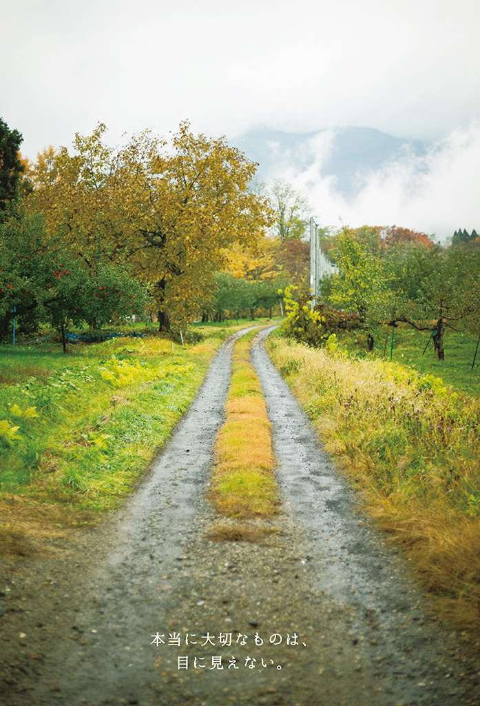
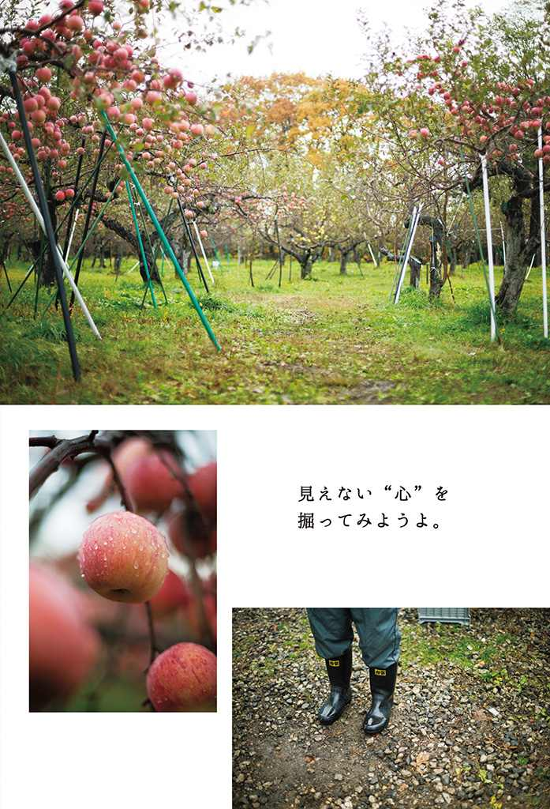
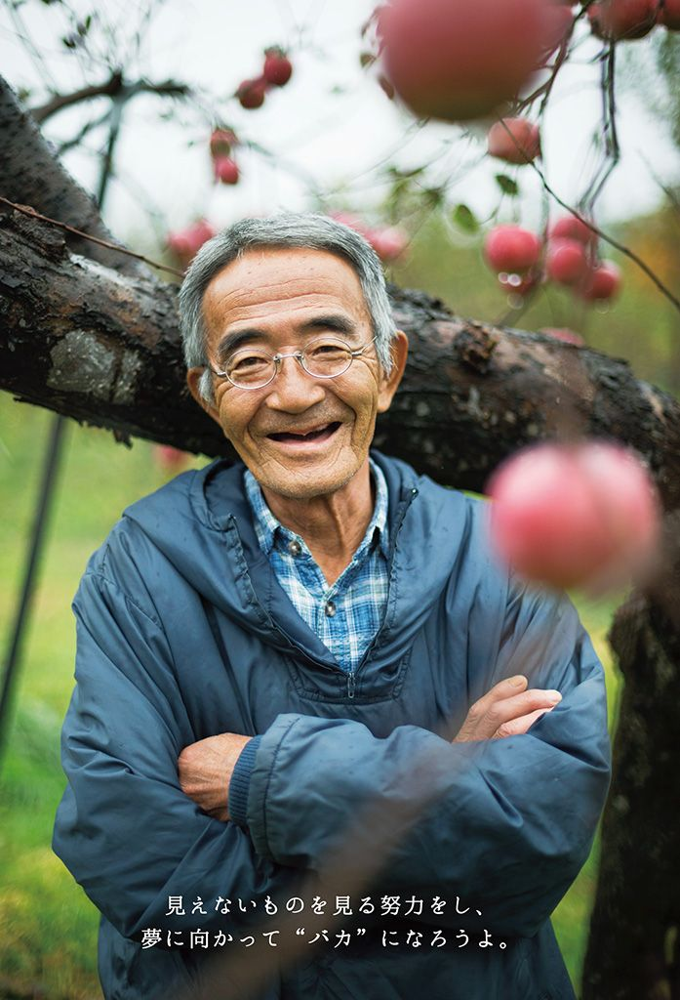
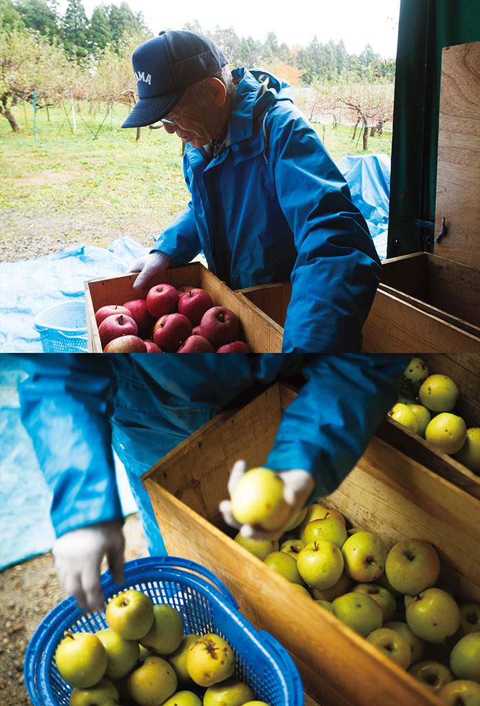
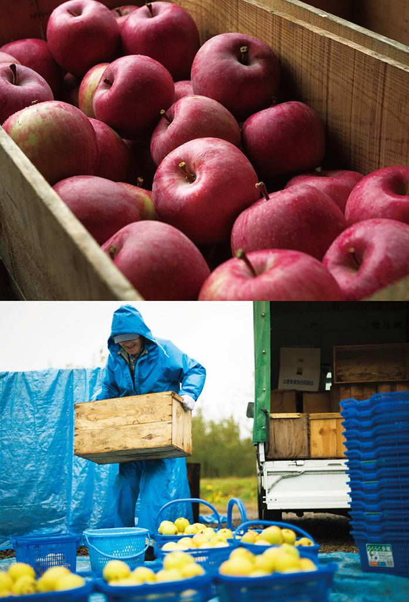
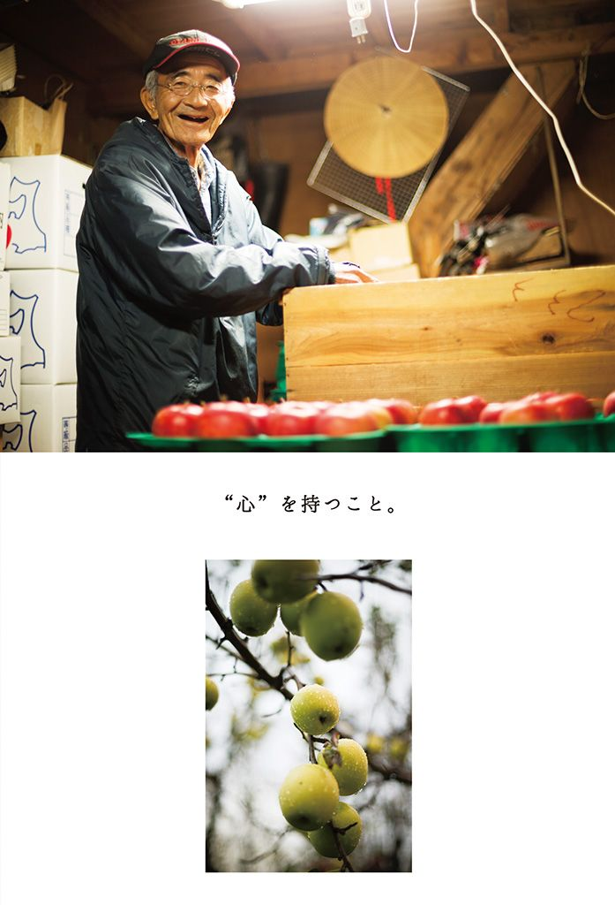
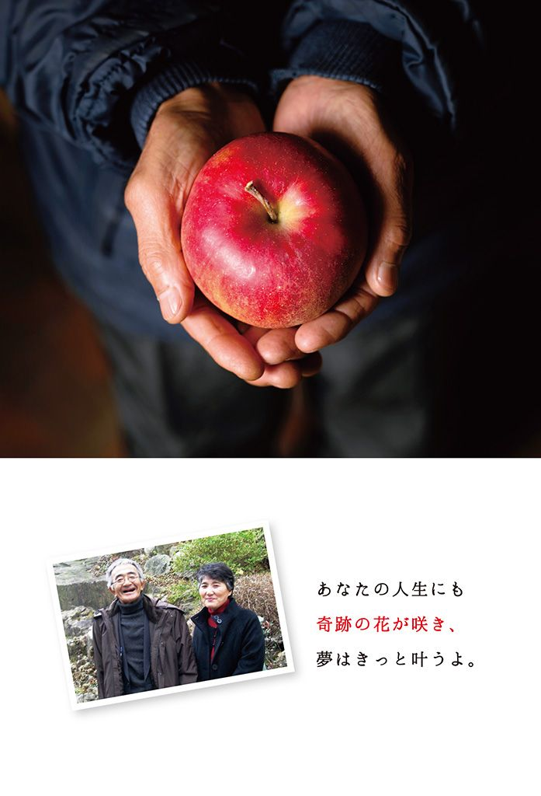
私の生まれ故郷、青森県の津軽地方には、「じょっぱり」という言葉があります。
津軽人の気質をあらわす言葉で、「頑固者」とか「強情っ張り」といった意味です。
一度決めたことは、あきらめずにやり遂げる。
自分の信念を、とことん貫き通す。
長い冬に耐え、雪と戦いながら暮らしを紡いできた津軽平野の人々の心には、そんな「じょっぱり魂」が根づいています。
私も、じょっぱりの一人です。
いや、筋金入りのじょっぱりと言えるかもしれません。
絶対に不可能だと言われ続けた無肥料、無農薬のリンゴ栽培に取り組み、約10年もの間、悪戦苦闘を続けたのですから。
農薬をまくたびに寝込んでいた女房をなんとか楽にしてやりたい。その一心で始めた挑戦です。けれども、農業の常識からすれば、それは無謀以外の何ものでもありませんでした。
人からは嘲笑され、家族は貧乏のどん底を味わいました。私はとことん追い詰められ、死を選ぼうとした日もありました。
しかし、冬がつらく長ければ長いほど、春の喜びがひとしお身にしみるように、苦労が多ければ多いほど、その苦労が実ったときの嬉しさはこの上ないものです。
枯れかけた木が回復し、真っ白いリンゴの花が再び咲いてくれた日のことを、私は今も忘れることができません。女房は泣いていました。私の目にも熱いものがこみ上げてきました。
そして今、私が育てたリンゴは〝奇跡のリンゴ〟と呼ばれるようになり、本や映画、講演などを通して、多くの人とのご縁をいただきました。ここまでこられたのは、リンゴを実らせることだけを考えてきたじょっぱりの私を支えてくれた女房、家族、そして太田昭雄さんと山﨑隆さんという二人の友がいたからこそです。
魂の絆で強く結ばれた存在を、「ソウルメイト」と呼ぶそうです。
私のリンゴは、深い絆でつながり合ったソウルメイトたちと一緒に実らせたリンゴです。
リンゴが実るまで、私は自分がリンゴをつくっていると思っていました。しかし、そうではありませんでした。
私にできることは、リンゴのお手伝いだけ。大きな自然のしくみのなかで、リンゴが気持ちよく育つ環境を整えることだけでした。
ソウルメイトとの縁がなければ、特に、女房という大事な存在との縁がなければ、私はこの真実にたどり着くことはなかったでしょう。
どんなときも相手を信頼し、互いに支え合う強い絆。それができるのが、ソウルメイトです。そんな絆について、この本で書かせていただこうと思います。人と人とがつながり合い、助け合う関係こそが、未来を築いていくと思うからです。
これまで私は全国を歩いて、無肥料、無農薬の自然栽培について伝えてきました。今、仲間は各地に広がり、新しいソウルメイトたちとの出会いが生まれています。
自然栽培が、いつか日本の農業の「当たり前」になること。それは、まだ「夢のような話」かもしれません。
しかし、ソウルメイトたちとの魂の絆があれば、また奇跡は起きる。
そう信じて、今日も私は懸命に走り続けます。
木村秋則
装幀・本文デザイン 今東淳雄 maro design
イラストレーション 瀬戸 照
撮影 望月 孝
構成 江藤ちふみ
編集 奈良岡崇子（扶桑社）
青森でリンゴ栽培が始まったのは、１３０年ほど前のこと。明治８年（１８７５年）に政府から青森県へ３本の苗木が配布され、県庁内に植えられたのが始まりだそうです。
今や青森はリンゴの生産量日本一。私が住む弘前は青森県でトップの生産量を誇り、実に日本のリンゴのほぼ半分を生産しています。
弘前の秋は、たわわに実ったリンゴの鮮やかな赤で彩られます。１年間手塩にかけて育てたリンゴが、いっせいに丸々とした実をつけるこの季節。そして、雪が解け、若葉のなかでリンゴの白い花が咲き誇る春。この２つの季節は、リンゴ農家にとって何とも言えない心躍る季節です。
本来ならうれしいはずの春と秋を、私は何年もの間、くちびるをギュッと結び、下を向いてやり過ごさなければなりませんでした。私の畑には、リンゴの実ひとつならないどころか、花一輪さえ咲かなかったからです。
病気と虫に痛めつけられ、枯れ木のようになったリンゴの木が並ぶ畑。春も秋も訪れない沈黙の畑。それが私の畑でした。はじめは８００本あったリンゴの木のうち、最終的には半数の４００本を枯らしてしまうことになりました。
すべて、「無農薬でリンゴを育てたい」という途方もない夢のせいです。
農薬も肥料も使わずにリンゴを育てるという夢を追いかけるうちに、私は、30代半ばにして数千万の借金を背負い、家族を貧乏のどん底に突き落としていました。「かまどけし（かまどの火を消す者＝破産者、愚か者）」と呼ばれて周囲から孤立し、苦しみ抜く毎日。家族に辛酸をなめるような苦労を味わわせ、それでも、「答えは必ずある」と自分を信じ続けました。
そんな私は、正真正銘の「バカ」と言えるでしょう。
その「バカ」がようやく実らせたリンゴは、今「奇跡のリンゴ」と呼ばれています。放置しても腐らず、芳香を放ちながら枯れていく不思議なリンゴです。化学物質過敏症で普通の食べ物を受け付けなくなった患者さんが、唯一食べることができたリンゴです。
答えを見つけるのに要した時間は、11年です。長い長い年月でした。
仕方ありません。リンゴの無農薬栽培に成功した人は誰ひとりおらず、どの文献にも栽培法は書かれていませんでした。私は数限りない失敗のなかから、自分で探し出すしかありませんでした。
結局、答えを教えてくれたのは自然でした。
私は、自然と闘うことをやめたのです。リンゴをならせようとするのをやめたのです。「リンゴのお手伝い業」に徹し、畑の土を大自然と同じ状態に戻したら、ずっと黙って耐えてくれていたリンゴがようやく息を吹き返してくれました。
栽培が軌道に乗ったのは、20年ほど前です。それからしばらくして、無農薬、無肥料の自然栽培を広めようと、私は全国を手弁当で歩き始めました。
農薬や肥料を使わない自然栽培を一人でも多くの人に実践してもらい、健康な農作物をつくってほしかったからです。また、地球の環境を汚さない自然栽培こそが、誇りを持って取り組めるこれからの農業だと考えたからです。
今でこそ各地で温かく歓迎していただき、どこを訪れてもたくさんの笑顔が待っています。しかし、各地を回り始めた当初は、厳しい批判や冷たい反応も多くありました。
今でも、自然栽培は決して主流ではありません。
津軽のほとんどのリンゴ農家から見れば、私は異端児。たくさんの仲間や理解者がいるとはいえ、まだまだ異質な存在です。
それでも、世の中を変えていくのは、こんな「バカ」なのではないかと思うのです。
私は時折、イタリアの天文学者、ガリレオ・ガリレイのことを思い出します。
天体望遠鏡で星を観測したガリレオは、コペルニクスが唱えた地動説が正しいことを確信し、著書で表明しました。そしてその結果、宗教裁判にかけられて有罪となり投獄されます。判決の際に「それでも地球は回っている」と言ったという話は有名です。
当時、教会をはじめイタリア中が彼を批判し、奇人・変人扱いしました。不遇のうちに亡くなったガリレオは、１００年もの間、墓を造ることさえ許されなかったそうです。
現代では地動説を疑う者は誰一人いないでしょう。当時の「異端」は、現代の「当たり前」になり、ガリレオの功績は今では正しく評価されています。
その時代の常識を覆すような「バカ」がいないと、時代は大きく変わりません。
自然栽培は、今はまだ少数派です。しかし今から数十年後、あるいは１００年後には常識になっているのではないか。私は、そう夢想するのです。
「あのバカが言っていたことは、理にかなっていることだった」
「あいつは、当たり前のことを言っていただけだった」
私が死んで30年、50年が過ぎたころにはリンゴ農家にとって自然栽培が「当たり前」になり、そう言われるのを夢見て、私は今年も１年の３分の２を旅に費やしました。
私は、自然栽培だけが、唯一すばらしい栽培法だと言うつもりはありません。
また、農薬を悪者扱いしたり、責めたりしているわけでもありません。苦労した分だけ、農薬のありがたさは身にしみてわかっています。私のようなバカでなければ、無農薬でリンゴをつくるなど思いつかなかったでしょう。
しかしその栽培に成功した今、いつか農薬や肥料が自然に世の中からなくなる時代がくるのではないかと思っているのです。
青森県のリンゴの売上高は２０００億円。全農の試算では、そのうち１２００億円が農薬代だそうです。この数字を見ると、農薬を使わず生産できるならそうしたいと誰もが思うのではないでしょうか。
けれども、今すぐいっせいにすべての農家が自然栽培に移行すればいいかというと、それは現実的ではないでしょう。
社会は、急激な変化を望まないものです。ドンと打ち上がった花火は、どんなに大きくても、どんなにきれいでも、一瞬で消えていきます。花火のように一度に大きく広がったものは、長続きしません。私は、自然栽培を一時のブームで終わらせたくないのです。
農薬漬け、化学肥料漬けの農業が「常識」の農業を変えるのは、並大抵のことではありません。何十年も続いてきた農家の価値観や栽培法だけでなく、経済や流通のしくみも変えていく必要があります。
しかし、それは決して不可能なことではありません。
希望を持って、自然栽培に真剣に取り組む生産者が一人でも増えてほしい。そんな思いで、私は一歩一歩あゆみを進めています。
３００年近く続いた江戸時代が終わる幕末には、多くの若者が時代を変えるために命がけで奔走しました。吉田松陰や坂本龍馬をはじめとする志士たちです。松陰や龍馬の志を継いだ彼らは、各地の仲間とつながり力を合わせて、明治維新を成し遂げました。
私が広げようとしている自然栽培は、幕末の志士たちがやろうとした維新と似ているのではないか。そう感じています。
今、私の志に共感してくれる農家や農業グループが、各地で活動の輪を広げています。少しずつですが、確実に変化が起きているのです。
ところで「志」という字は、すごい字だなと私はいつも感心します。なぜなら、「心」という字が下にあって、上の字を支えているからです。自分の目指すことを成し遂げるために、心を抑えながら生きていく──。それが、志ある生き方ではないでしょうか。
私の農業への志は、誰にも負けないつもりです。
仲間とともにこの志を果たしたい。そんな気持ちで、私は全国を歩いています。
どんなに太くたくましいヒマワリでも、たった一本しかなければ、強い風に負けて倒れてしまいます。しかし、何十本、何百本とまとまって咲くヒマワリ畑では、たとえ一本一本は細くても、風に耐えることができます。
何事も性急に進めると、それなりのひずみや混乱を覚悟しなければなりません。私のリンゴ畑は、農薬や肥料をいっせいに絶ち、急激に変化させようとしたために、異常をきたして悲惨な状態になりました。ですから、いつの間にか自然栽培が広がり、気がついたら日本が大きなヒマワリ畑になっていた。そんなゆるやかな変化が理想です。
そのためにソウルメイトをはじめとする全国の仲間とつながり、維新を起こしていきたいのです。
なぜ、自然栽培で農業に維新を起こさなければならないのか。
不安をあおるつもりはありませんが、今、地球に深刻な問題が起きています。
ここ数年、ゲリラ豪雨や竜巻など、今まで耳にしなかった異常気象が増えていると思いませんか？ 最近では「経験したことのない大雨」という、聞き慣れない表現まで使われ始めました。ゲリラ豪雨のことを以前は「集中豪雨」と言っていましたが、異常な量の雨によって被害があっという間に出るようになり、２００８年ごろからマスコミでこの言葉が使われ始めました。日本では珍しかった竜巻も、近年では毎年のように被害が報道されています。
こういった異常気象が、農薬や肥料と関係していると言ったら驚くでしょう。しかし調べてみると、そうとしか思えないのです。
畑にまかれた農薬や肥料、家畜の生の糞尿は、土に染み込み地下水を汚染します。化学物質で汚染された地下水は川を下って海へ流れ込み、それをきれいにしようとしてバクテリアやプランクトンが大量発生します。すると、その呼吸熱によって水温が上がり、低気圧が発生するのです。
それが、ゲリラ豪雨や竜巻、また巨大台風の原因になるというわけです。
最近増えているアメリカの巨大ハリケーンや日本の台風の大型化も、農薬や肥料による海水の汚染が原因だと私は考えています。
自然の猛威の前では、私たち人間は、なすすべがありません。台風や竜巻が起きたら、ただ逃げるだけ。過ぎ去ってくれるのを待つだけです。
しかし、その原因を人間がつくっているとしたら話は別です。自然現象を止めることはできませんが、原因をなくすよう、今より一歩前に進んだ学問や農業に取り組むことはできるはずです。
汚染された地下水は、魚たちにも大きな影響を与えています。青森県と秋田県の境にまたがる世界遺産、白神山地の下流で、数年前に背骨の曲がった奇形魚が発見されました。一般には報道されていませんが、全国の河川で同じ現象が起きているようです。
かつての日本はきれいな水に恵まれた国でした。どこに行っても、清流がありました。しかし、近所の川を見てください。そこに清い水が流れているでしょうか。その原因がどこにあるか。真剣に考えなければいけない時期に来ています。
化学物質は、土や水を汚染するだけではありません。空気中に飛散して、大気汚染や地球温暖化の原因になっています。
農家がよく使う化学肥料に、窒素肥料があります。窒素肥料を畑に10キロまいたとしても、農作物が吸収するのはわずか１キロ～１・５キロ。あとは、雑草や土が２～３キロ吸収します。そして、残りの５・５～７キロは、数日後にすべてガス化して空気中に飛び散ります。
そのガスは亜酸化窒素ガスと呼ばれ、オゾン層を破壊する主原因になっているとアメリカ海洋大気局（ＮＯＡＡ）が指摘しました。亜酸化窒素ガスは、他の農薬や化学肥料、家畜の排泄物からも発生します。このガスは、なんと二酸化炭素の３１０倍もの温室効果があるそうです。ＮＯＡＡは、全世界で亜酸化窒素ガスを発生させない栽培法の開発が急務であるという見解を公式に出しています。
オゾン層の破壊や温暖化が地球に与える影響については、私が言うまでもないでしょう。
自然環境を一度でも汚してしまったら、修復には長い時間がかかります。
環境破壊の原因のひとつが、今の農業にあることは間違いありません。かけがえのない地球です。農薬も化学肥料も使わない、自然の働きに寄り添った農業を、私たちは地球規模で選んでいくときではないでしょうか。
これから始まる新しい時代に必要なものは、何でしょう。
今まで誰も見たことのない技術、誰もやったことのない生き方、体験したことのない社会のしくみ。次世代をつくるのは、そういった革新的な「何か」なのかもしれません。
その「次世代」という言葉について、私は少し思うところがあります。
あまりにも簡単に、「次世代」と名づけすぎているのではないかと感じるのです。
「次世代型コンピューター」「次世代の車」「次世代住宅」......。はたして、それらは本当に次世代と呼べるでしょうか。
世代とは、親から子へ、子から孫へと、何十年というスパンで受け継がれる時間の流れを指します。長い流れのなかで続いてきた過去の概念をくつがえし、誰もが目を見張るような変化を遂げたものは、たしかに次世代のものだと言ってもいいでしょう。
たとえば、もし小さく折りたためるナイロンシートのパソコンが登場したら、「次世代」と呼んでいいかもしれません。しかし、電気製品や工業製品などは、ほんの数年しかたっていないのに、すぐに「次世代」が出てきます。もちろんそれらは、より高性能になりすばらしい進歩や進化を遂げています。けれども、言葉の使い方が正確ではないと思うのです。あいまいな感覚で次世代と名づけてしまうと、本当の次世代はいつまで経っても現れません。
次世代の製品や考え方を生むのは何でしょう。
それはやはり、自分の足で歩き、目や耳で見聞きした経験ではないでしょうか。
今はコンピューターがとても身近になり、生活が便利になっています。パソコンやスマートフォンがあれば、いつでも最新の情報に触れられ、買い物やメール、写真のやりとりなどが気軽にできます。ゲームも、勉強も、会ったことのない人と交流することも、世界中に情報を発信することも可能です。
しかし、パソコンに頼りすぎる社会はとても危険です。
初めてそう思ったのは、18歳のときです。
私は地元の高校を卒業した後、川崎にあるトキコという日立系列の会社に就職しました。家は農家でしたが次男でしたし、農業をしたくなかったため、親に内緒で試験を受けて半ば強引に就職したのです。
最初に配属されたのが、原価管理課という部署です。会社の中枢部とも言える部署で、私以外は全員大卒でした。そこで生まれて初めてコンピューターに触れたとき、「コンピューターに頼り切ってはいけない。これは、世界や人間を崩壊させる......」と直感したのです。
会社にあったコンピューターはＩＢＭ製で、当時１億円もする最先端のものでした。といっても40年以上も前ですから、性能は現在と比べものになりません。
まだマウスはなく、コマンドをひとつずつ手で打ち込みます。データを保存するフロッピーディスクは下敷きみたいな大きさで、わずか64キロバイトしか容量がありませんでした。一文字でもコマンドを間違うと、最初からすべて打ち直しです。それで何万人もの給与計算などをしていたのですが、非常に便利な半面、心して使わないと人間をダメにすると感じたのです。
なぜかといえば、何の自覚もないままにコンピューターを使い過ぎると、コンピューターの中の世界が正しくて、現実の世界が偽物だと錯覚してしまうのではないかと思ったからです。それほど、コンピューターは魅力的でもあったということです。
当時の私の予感は、もしかすると当たっていたかもしれません。
今は、一日中スマートフォンやパソコンでインターネットにつながるようになり、現実よりも、ネットの世界に夢中になる若者が増えているようです。
最近では、自分の子どもが高熱を出して泣いているのに、親はネットにかかりきりで病院に連れていかず、死なせてしまった事件もありました。また２０１０年には、ネット掲示板で中傷されたのを見返そうとして、まったく関係のない人を殺傷するという痛ましい事件が秋葉原で起きました。
どちらも、原因は同じ。現実が「主」であり、インターネットの世界はあくまでも「従」であることがわからなくなったことです。
もちろん、コンピューターは今の世界になくてはならないものです。
しかし、同時に「過去のもの」なのです。どんなに性能がいいコンピューターも、人間がデータを打ち込まないと使えません。「こういうことを書きたい、発信したい」と思ったら、先回りしてやってくれるなら話は別です。けれども、どこを探してもそんなコンピューターはありません。また今後も出てこないでしょう。
過去のデータがどれだけあったとしても、新しいものは生み出せません。インターネットの中で交流できたとしても、現実に触れ合っていることにはなりません。
あくまでも、「主」は私たちであり、今、目の前にあるこの現実です。インターネットでつながることも大切ですが、実際に足を運んで顔を合わせて交流すること、自分で体験していくことを忘れてはならないと思います。
その姿勢こそが、真の「次世代」をつくると思うからです。
もう少し、私が近ごろ気になっていることについて話を続けさせてください。
私が、「何だか、ちょっとおかしいんじゃないかなあ」と思っているのは、最近の日本語です。
「ウザい」「キモい」という言葉があります。言うまでもなく、本来は「うざったい」「気持ち悪い」です。それが今では、「ウザ」「キモ」のほうを耳にする機会が多いようです。また、「やばい」や「かわいい」もよく聞きます。何でもその一言で済ませてしまう風潮も、少し違うんじゃないかなと感じます。
英語は26文字、ハングルは20文字しかありません。それにひきかえ、日本語には51文字もあります。文字の数を見ただけでも、日本人がきめ細やかな言葉を使ってきたことがわかります。黄緑の葉っぱの色を表すにしても、濃い黄緑、薄い黄緑、若草色、若葉色、萌黄、鶯色など、すぐに何種類もの言葉が出てきます。
世界でもっとも難しい言語のひとつだといわれる日本語。それを日本人誰もが使いこなせるのです。
１０００年以上も前の万葉集の時代、日本人はたった31文字の和歌で、相手を慕う気持ちやふるさとを思う気持ちを見事に表現していました。自分の心情と、自然の風物などをひとつの言葉で表現した掛詞には、日本人ならではの細やかな感性と知性が表れています。その日本語にもっと誇りを持っていいのではないでしょうか。
日本のパソコンソフトは英語表記ですが、中国では中国語表記、韓国ではハングル表記です。考えてみれば、自国の製品に母国語を使うのは当たり前のこと。なぜか、日本ではそれが当たり前にはなっていません。
また、最近は国際化を見越して、社内の公用語を英語にする企業も出てきています。私は、これには無理があるのではないかと考えています。あるコンピューターメーカーは、英語を公用語にしたところ、売り上げが大幅に下がったそうです。
言葉は人を表します。言葉をおろそかにすると、生き方もおろそかになるような気がしてなりません。明治以来、日本は欧米化を進めてきました。しかし言葉まで欧米化して、日本語の豊かさを失う必要はないはずです。
日本語がおろそかになっているのは、日本人が日本そのものに誇りを持てなくなっているからかもしれません。
私は、愛国心というものは、持っても持たなくてもいいと思っています。けれども、日本人としての誇りは大切です。一人ひとりが、「自分は日本人だ」と自信を持って言えるようにならなければいけないのではないかと思います。
２０１２年、日中関係が悪化して中国でデモが起きた際に、参加者の多くが中国国旗を持っていました。その映像を見て、私は少し情けなくなりました。中国に対してではありません。「日本人が、国旗を持ってデモをするなんて今はあり得ない」と思ったからです。
もちろん、実際に国旗を持ってデモをしたほうがいいとは言いません。けれども、自分の愛する国のために、毅然として意思を表明することは大切だと思います。
日本人としての誇りを思うとき、私は尊敬する華岡青洲の存在を思い浮かべます。
華岡清洲は、江戸時代に世界で初めて全身麻酔での乳がん手術を成功させ、世界の医学に大きく貢献しました。その成功の陰には、母と妻の支えがあります。二人とも自ら進んで麻酔薬の実験台になり、その副作用で母は亡くなり、妻は失明しました。
家族を犠牲にした青洲は、崖っぷちに立って突き進みました。青洲の偉業と私の仕事とは比べものにはなりません。しかし、絶対に失敗するわけにはいかないギリギリのところで研究を続けたその生き方は、どこか自分と重なる部分があるような気がします。
また、青洲の母と妻も、日本人ならではの生き方を貫いた人です。二人にとって、実験が成功するか失敗するかは二の次だったはず。ただひたすら青洲の成功を思って、自分の身の安全を省みず実験台になったのでしょう。日本人だからこそ、自己犠牲とも言えるそんな生き方ができたのではないでしょうか。
日本に誇りを持つということは、他の国をバカにしたり嫌ったりするということではありません。もちろん、他の国と争って勝とうとすることでもありません。日本に誇りを持てば、同じように他の国も大切にしようという心が生まれてくるはずです。
自然栽培を広めたい一心で、これまで声をかけてもらったところには、海外でも都合をつけて訪れてきました。韓国、台湾、ドイツ......。
国や宗教や考え方は違っても、生産者が安全な農作物を消費者に提供したいという思いは一緒です。気候や風土の違いは考慮しますが、自然栽培のやり方が変わるわけではありません。どの国でも心を込めて指導をしています。
特に、お隣の韓国へは定期的に訪れていて、ありがたいことに２つの都市で名誉市民の称号をいただきました。
しかし、通い始めた当初は、戸惑うこともしばしばありました。
ある講演会でのことです。会場には１０００人を超す聴衆が集まっていました。そこで私は「加藤清正が来た！」と言われたのです。加藤清正は安土桃山時代から江戸初期にかけて活躍した武将で、豊臣秀吉の命を受けて朝鮮半島に出兵した人物です。突然４００年以上も前の朝鮮出兵の話を持ち出されて、正直驚きました。
日本と韓国の間には、太平洋戦争の際にも悲しい歴史があります。私たち日本人は忘れていたとしても、韓国の人にとって、はるか昔の朝鮮出兵がいまだに禍根となっているのも仕方のないことかもしれません。私はそのとき、歴史の重みというものを痛感しました。
けれども、過去は過去としてしっかり受け止め、前を向いて歩いていかなければなりません。私は、こんなふうに話しました。
「もし神様や仏様がいて天から地球を眺めたら、そこに線は引いてないでしょう？ 国境はないでしょう？ 私は、そういう気持ちでこの国に来ています。両国にどんな過去があったのか直接は知りません。しかし、歴史をさかのぼると、日本があなたがたの国に迷惑をかけてしまったことは確かなようです。それについては謝罪します」
そうやって、素直に謝るべきところは謝る。それから、一緒に未来について考えていく。それでいいのではないかと思います。韓国の人たちもそんな私の姿勢に納得してくれたからこそ、交流が続いてきたのでしょう。
農家が真剣に農業に取り組む姿は、どの国でも同じです。そんな姿勢に接するとき、やはり地球に国境はないと嬉しくなります。
ケニアの人たちが来日し、農業指導したときのことは、今でも忘れられません。彼らの滞在予定は、たったの３日。その間に結果が出る野菜は何だろうと考え、選んだのが大根でした。
ケニアは、雨季と乾季に分かれたサバナ気候です。その気候に合うように、私は水やりなしでも発芽するような種のまき方をしました。瓶の底で土をくぼませ、中央の高いところに種をまいて、周囲のくぼんだところにたまった朝露で発芽するようにしたのです。
大根は、無事３日後に芽を出しました。すると、芽を見たケニアの人たちは畑ではだしになって踊り始めました。そして、ひざまずいて土に額をつけ、土の精霊に感謝を始めました。日本人は踊りだしたりはしませんが、作物が芽吹く喜びは農家にとって世界共通です。帰国後、彼らはケニア郊外で大根をつくっているそうです。
有機栽培の盛んなドイツでは、「あなたたちの農法は間違っている」と講演で言ったため、聴衆から大ブーイングを浴びたこともあります。通訳が、「ドイツでは結論から先に言うように」とアドバイスしたのでそうしたのですが、会場中から非難を浴びて困ってしまいました。
私は、有機栽培とはいえ、ドイツの人たちがゴルフボールほどの小さなジャガイモで満足しているため、もっとよい栽培法があることを伝えたかったのです。彼らにしてみれば、自分たちの栽培法が否定されたので腹が立ったのでしょう。
しかしその数カ月後、あれほど反発していた人たちがガラッと態度を変えました。私の栽培法で現地に植えたジャガイモは、彼らが作ったものより数段大きかったのです。
そのドイツでは、近々私の本が発売される予定になっています。
私はたまに、航空写真を見ることがあります。
小さな支流が幾筋も集まり、大きな川になる様子は見ていて飽きません。私の故郷の岩木川にも、たくさんの支流があります。川の流れを見ていると、経済はこのように動かしていきなさいと、自然が教えてくれているように感じます。
アマゾン川や揚子江、日本なら関東の利根川や九州の筑後川。どんなに大きな川でも、もとはといえば小さな湧き水から始まります。ひとしずくの水が集まり、小さな流れとなり、それが小川となって下流へ流れ、いつしか豊かな恵みをもたらす大河になっていきます。
大切にするべきなのはどこでしょう？ 下流でしょうか、上流でしょうか。
水は川上から川下へと流れます。上流の水が汚れたり枯れたりすれば、たちまち下流に影響を及ぼします。川の水が汚れてしまったときには上流をきれいにしなければ、下流でどんなに浄化しても元に戻りません。それが自然の姿です。
作物を育てるとき、手本にするのはこの川の流れです。
経済も同じです。川上を大切にしなければ、川下に問題が出てきます。
会社にたとえれば、本当に大事なのは支店です。景気が悪くなって真っ先に縮小されるのは地方の支店ですが、お客さまと直接接する支店が栄えなければ、本社は豊かになりません。
スーパーの棚に並んでいる米や野菜、果物、肉や魚は、誰がつくっているのでしょう？
地方の生産者です。輸入品ももちろん多く並んでいます。けれど、地方でがんばる生産者がいるから、米や野菜、魚、肉などが食べられる。だから、都市に住む人たちが、毎日元気で働けるのです。
今、表面上は地方の活性化が叫ばれていますが、実際に地方に住んでいると、首をかしげざるを得ません。
植物で大切にしなければならないのは、末端の枝葉や根っこ。栄養を取り込むのは光合成する葉っぱであり、地中から栄養分や水分を取り入れる根っこだからです。幹や茎には、葉も根もついていません。葉っぱが繁り、根がたくましく地中に張っていてくれなければ、どんな植物も枯れてしまいます。末端の枝葉や根は、命の絆で結ばれた幹へと、養分や水分を届けます。だから、末端（地方）が豊かになる経済構造に変われば、自然に幹（都市部）も豊かになるのです。
自然の中では、水は高いところから低いところに流れていきます。ところが今、社会の動きを見ると自然からは程遠い姿になっているようです。水が低いところから高いところへ逆流しているような状態。人間がエネルギーを加えて、水をわざわざポンプで上げるような不自然なことをしているように思えます。
だから、誰もがいつも効率ばかり追いかけなければなりません。そして、うつ病患者や自殺者の増加、環境汚染、キレやすい子どもたち、花粉症やアトピーなどアレルギーの多発......。いろいろな弊害が出ています。
自然は社会のあり方を教えています。今いちばん必要なこと。それは、自然から学ぶことではないでしょうか。
人間本来の自然なあり方がゆがんでしまったと、強く感じる出来事がありました。
去年の秋のことです。東日本大震災の被災地の子どもたちに、私のリンゴを食べてもらいたい。そう考えて、福島県に話を持ちかけたのです。すると、県の対応はこうでした。
「配るには数が足りないので、送らないでください」
私は、「はんかくさいことを言うものだ」とあきれました。
はんかくさいは、津軽弁の言葉で「バカだなあ」「愚か者だなあ」という意味です。共通語の「バカ」よりも情のあるニュアンスを含み、子どもがいたずらをしたときなどにも使います。しかし、このときだけは大いにがっかりして、いつもの「はんかくさい」に少しばかり苛立ちが加わってしまいました。
数が足りなければ、リンゴを切って分ければいい。考えなくてもわかることです。なぜ、そう思えないのでしょうか。
結局、リンゴは民間団体を通じて無事に寄付することができ、子どもたちに喜んでもらえました。福島の小学校の先生たちが、私が不在のときに畑を訪ねてくださったそうですが、県の対応には釈然としない思いが残りました。
またこんなこともありました。私がデパート向けに生産しているリンゴジュースがあります。あるとき、あえて容器のガラス瓶にシールを貼らず、瓶の口にタグをつけることにしました。瓶にシールを貼るとリサイクルするときに、ガラスの品質が落ちるからです。
すると、しばらくして保健所からクレームが来ました。「衛生上許可できないから、瓶にシールを貼るように」とのことでした。きちんと密封されており、品質管理しているのに納得できません。そこで「国が政策としてリサイクルを進めているから、せっかくラベルをタグにしたのに、わざわざシールを瓶に貼るのはおかしくないですか」と言うと、担当者も最後には納得してそのままで出荷することができました。
こんなふうに「あれ、おかしいんじゃないかな」と思うことは、よくあります。
なぜ、こんなに融通の利かない日本人が増えてしまったのか、私なりに考えてみました。
今はスイッチひとつで何でもできるようになりました。また、お金さえ出せば欲しいものが買え、欲しいサービスが受けられるようになりました。あまりにも便利になって、人と助け合うことのありがたみが忘れられかけています。だから、日本人は少し心が脱線してしまったのではないでしょうか。
たとえば、みんなが乗っている船の底に穴が開いたとします。水がドンドン入ってくるから逃げなければなりません。そのとき、救命ボートが人数分なかったとしたら、どうせ全員助からないのだから、みんなで溺れればいいかというとそうではありません。最後まで助け合いながら、なんとか全員で生きる道を探すのが人間です。
他人を思いやり、知恵を出す力が失われて、「自分さえよければいい」「楽さえできればいい」と考える人が増えているのかもしれません。
日本について考えさせられる出来事がいくつか重なって、私は思ったのです。
今の社会は、お月さまがお月さまに見えなくなっているのではないかなあ、と。
夜空に浮かぶ月は、誰でもお月様に見えるでしょう。では、池に映った月はどう見えるでしょうか？
もちろん、そのままお月さまに見える人もいるでしょう。でもなかには、黄金に見える人がいるかもしれません。その人の欲が、月を黄金に見せてしまうのです。
人間ですから、ある程度の欲は必要です。欲がまったくなかったら、ただの無気力な人生になってしまいます。けれど、欲ばかりが強すぎるのは問題です。特に、自分の利益ばかりを優先させようとする我欲は、もっとも捨てなければならないものです。
欲や執着を捨てて今に満足することを、仏教では「足るを知る」という言葉で表します。これは、私が自然栽培を実践するときにも、大切にしている言葉です。
お月様が、ちゃんとお月さまに見える社会。青森の一百姓の私ですが、そんな社会をつくるお手伝いができればと考えています。
なぜ日本は、池に映ったお月さまをありのままに見ることのできない社会になってしまったのでしょうか。それは、私たちの食に問題があるからだと私は考えています。
今でも忘れられない話があります。数年前に、ある業者のかたから聞いた話です。
あるイベントが悪天候で中止になり、大量のお弁当が余ったのだそうです。そこで、養豚業者に豚のエサとして配布したところ、翌日「二度と要らない」とクレームが入りました。お弁当を食べさせた豚が、別の生き物にでもなったように大暴れをしたというのです。
もうひとつ、ある葬儀組合の会長さんからこんな話も聞きました。
私の講演を聴いてくださったその会長さんは、「木村さんの話、大変よくわかります」と言ってくださり、「最近、亡くなった人のご遺体が腐りにくくなっているのです」とおっしゃったのです。「特に、若い人の死臭がしなくなった」と話していたのが、印象的でした。
どちらも、あまり気持ちのよい話ではありません。しかし、大切なことを警告していると思うのであえてご紹介しました。
これらの話を聞いて、私は心と体にトラブルを抱える日本人が増えていることを思い出しました。先ほど書いたように、うつ病や神経症を患う人が増加し、自殺者も年間３万人に達します。アトピーやぜん息の子どもたちも増えています。
警察庁のある人は、「若者の犯罪が激増している。いろんな理由が考えられるが、食べ物が脳の一部を刺激していると確信している」と話していました。私も、食べ物が人の心を蝕んでいるのは間違いないと思っていたので、その言葉を聞いたとき、「やっと、食と心の問題に目を向けてくれる人が現れ始めたのか」と、感慨深いものがありました。
もちろん原因が特定できているわけではありません。ですから、あくまでも仮説です。
しかし、農薬と化学肥料がたっぷり染み込んだ米や野菜、果物が、心と体を本当にすこやかにしてくれるでしょうか。人を思いやる心や社会をよくしようという気持ちを、育ててくれるでしょうか。
心の問題だけではありません。
今、年間30万人が、がんで亡くなっています。これは３人に１人が、がんで亡くなっている計算になるそうです。ここ数十年でがんの発生率は急上昇しています。もちろん食だけが原因だと決めつけているわけではありません。さまざまな要因がからみ合っています。その数を減らすには、どうしたらいいか？ 答えはたくさんあるでしょう。
答えのひとつが、自然栽培の野菜です。
私は医者ではありませんし、自分自身はどんな食べ物でもおいしくいただいています。
しかし、自然栽培の野菜は今問題になっている心や体の問題を解決する力を持っていると、自信を持って訴えています。
農薬も肥料も除草剤も使わない農作物は、カビが生えたり腐ったりしません。放置しても、発酵したり枯れたりするだけです。驚かれるかもしれませんが、実験の結果わかった確かな事実です。
実験のきっかけは、偶然のできごとでした。ある年、我が家で食べている自然栽培の米をといで水につけたまま、女房が１カ月も忘れていたことがありました。そんなことをすれば、普通なら腐って異臭を放ちます。しかし、そのときは真夏にもかかわらず真っ白なままで、ほのかな発酵臭がするだけでした。「なぜ腐らないのだろう」と不思議に思った私は、一般栽培・有機栽培・自然栽培の米や野菜で腐敗実験をしてみたのです。
すると、一般栽培と有機栽培のものは、腐ってカビが生えたりドロドロになったりします。一方、自然栽培のものは、しなびて漬物のようになって枯れたり、あるいは発酵したりという結果でした。
腐敗と発酵は、どちらも微生物の働きによって起こります。発酵では分解作用によってアルコールなどが生成され、みそや酒が造られます。一方、腐敗で生成されるのはアンモニアで、これは人間に有益とは言えません。どちらが体にいいかは、おのずと明らかなのではないでしょうか。
体にいいはずの有機野菜が腐敗するのかと、疑問に思う人もいるでしょう。
たしかに有機野菜は、一般栽培ほど農薬は使いません。しかし、完全な無農薬栽培ではなく、石灰ボルドー液など政府が認可した農薬は使用していいことになっています。
また、肥料として使われる堆肥にも問題があります。十分に時間をかけて発酵させた完熟堆肥なら大丈夫ですが、未成熟の堆肥を使った野菜には、「硝酸態窒素」という物質が多く含まれています。硝酸態窒素は、人間の体に入ると亜硝酸という物質に変化します。亜硝酸は血液中のヘモグロビンの動きを鈍らせ、酸素が細胞に行くのを邪魔してしまうのです。
数十年前にアメリカで離乳食を食べた赤ちゃんが、真っ青になり死んでしまうという事件が多発し「ブルーベビー症候群」と呼ばれました。離乳食に含まれていた裏ごしホウレンソウの硝酸態窒素が原因でした。
今、有機野菜やオーガニック食品に関心が集まっています。食の安全への意識が高まること自体はとてもうれしいことです。しかし、個人的な意見ですが、「有機野菜だからいいものだ」と妄信してしまうのは、少し危険なのです。
本当に安全な農作物がこれからどんどん広がっていくためには、消費者の皆さんの意識を少し変えていただくことも必要かもしれません。
日本の農業は、「より甘く、よりおいしく、より見栄えよく」を追求してきました。少しでも曲がっていたり、キズや虫食いがあったり、大きさが規格外だったりすると、値が下がることがその理由です。また、「いいものを消費者に届けるんだ」という生産者のプライドもあります。特に果物は、海外のものとは比べものにならないくらいにおいしく、見た目もよく品種改良されています。
以前、海外出張先で、市場やスーパーに行って驚きました。一山いくらで売られている果物の大きさはまちまちで、キズものや形の悪いものも交じっていたのです。しかし、海外ではそれが当たり前。誰も文句を言う人はいません。
キズものや虫食い、規格外の農作物がもっと流通するようになれば、過剰な農薬や肥料の使用が抑えられるはずです。そうすれば、消費者は、より安全な野菜や果物を日常的に手にすることができます。
厚生労働省は、今や国民の２人に１人が病気にかかるおそれがあり、人口の６割が何らかの過敏症やアレルギー症であると発表しています。この現実に、農薬漬けの農作物が影響を及ぼしていることに間違いはないでしょう。
自然栽培の野菜や果物は、免疫力を高め、日本人の健康を守るために大きな役割を果たすことになるはずです。
あるシンポジウムで免疫学の大家である新潟大学教授の安保徹先生にお会いして、私はますますその思いを強くしました。
安保先生は、がんなどの病気の原因が免疫力の低下にあるということを発見し、免疫力を上げるための生活指導や講演に取り組んでいらっしゃいます。
お互い津軽の出身ということもあり、お会いしたときから私は安保先生にとても親しみを感じました。ふたりともまるで旧友のように津軽弁で訛って話し始めたので、シンポジウムの司会や聴衆のみなさんは困ったかもしれません。私も訛りが抜けないほうですが、安保先生も同じなのだと嬉しく思いました。
免疫力を高めて健康な体をつくる安保先生の理論と、土の力を高めて病気に強い健康な農作物をつくる自然栽培には、多くの共通点があります。医療と農業という分野の違いはあれど同じ志を持つ者として、安保先生はとても心強い存在です。
親しみやすい一面もあり、私のことを「浮き世離れして、この世の人でないみたいだ」とおっしゃるので、「でも、足はあるよ」と片足を出してお見せしたら、愉快そうに笑っていらっしゃいました。
安保先生は、１万６０００年前の縄文時代から、寒くて雪の多い土地に住み続けてきた津軽人には、いじけた部分と、仕事に対してのめり込み、がんばり抜くと言われる強さの２つの特徴があるとおっしゃいます。いじけた部分があるのは、自分たちのほうが早くから栄えたのに、のちになって奈良や京都が繁栄し、悔しい想いをしてきた先祖のＤＮＡが、体に染みついているからだそうです。
安保先生も、私には、一途に仕事にのめり込まないと気が済まないじょっぱり気質があるとおっしゃっていました。自分ではわかりませんが、日本の農業や地球の未来に対する危機感が、私をじょっぱりにしているのかもしれません。
というのも、こんな現実があるのです。
マスコミでは大々的に報道しませんが、近い将来、世界的な食糧危機が訪れることはほぼ間違いありません。
ロシア、アメリカ、ドイツ、オーストラリア、南アフリカ。世界の穀倉地帯や農作物の生産地に、砂漠化や異常気象が起きています。その大きな原因が、先ほどお話しした肥料や農薬の使用、二酸化炭素の過剰排出による温暖化の影響です。その温暖化を止めるにも、肥料や農薬を使わない自然栽培の普及が必要なのです。
また、近年取り沙汰されているＴＰＰ問題は、今後の日本農業の動向を大きく左右することになるでしょう。ＴＰＰに参加すれば、安い農産物がどんどん国内に入ってきます。ただでさえ元気のない日本の農業が大打撃を受けるのは、火を見るよりも明らかです。
安価な食品が買えるようになることは、消費者にとっては一見喜ばしいことのように思えるかもしれません。しかし、輸入される農産物の安全性については、何の保証もないのです。遺伝子組み換え食品や残留農薬に汚染された食品によって、食の安全が脅かされる可能性も大いに考えられます。
何よりも、農業がダメージを受けることによって、日本の食料自給率がまたもや大きく下がってしまいます。相手国の政情不安によって農産物の輸入がストップしたらどうするのか。現段階で、明確に指針を示せる人は誰ひとりいないのではないでしょうか。
ただ、状況は厳しいかもしれませんが、私は悲観していません。
自然栽培に取り組む仲間が全国にどんどん増えているからです。
それぞれが自分の足元から農業を変えていけば、きっといつか大きな変化が起きる。
日本人には、このピンチを乗り切る力がある。
私は、そう考えています。
次の章では、日本の宝、地球の宝である農業と自然栽培についてお話ししていきます。
肥料、農薬、除草剤を使わない自然栽培は、私の頭文字を取って「ＡＫメソッド」と名づけられています。このＡＫメソッドは、２０１１年、国連食糧農業機関（ＦＡＯ）の世界農業遺産システム（ＧＩＡＨＳ）に認証されました。
自然農法と言わず、自然栽培と呼んでいるのには理由があります。どんなに理想的な栽培でも、農家として経営が成り立たなければ、農業とは言えません。農家が自立していくための栽培法であるという意味を込めて、「農法」ではなく「栽培」と呼んでいるのです。
「自然栽培がいいということはわかるが、生産量が落ちて食料自給率が下がるのではないか」というご意見も、時々いただきます。
しかし私の研究と実践からいえば、自然栽培の畑や田んぼでも、一般栽培のものと比べて遜色ない生産量を十分にあげることができます。とはいえ、あくまでもこれは私個人の研究です。まだまだ改善すべきところはたくさんあるでしょう。これからみんなで知恵を出し合い、自然栽培について研究することで、さらに生産性を高めていけるはずです。
ありがたいことに、自然栽培を志す仲間が年々増え、私が全国を歩き始めたころとは随分状況が変わってきました。「自然栽培を成功させるには、どうすればいいですか？」という質問を受ける機会も増えています。
自然栽培を軌道に乗せるためには、大切なことが２つあります。
一つは、「頭を空っぽにする」ということです。
「なんだ、簡単だ」と思うかもしれませんが、人間にはこれがなかなかできません。
たとえば一昔前までは、農家が１００人いれば１００人とも、農薬は絶対必要だと考えていました。今はだいぶ変わってきていますが、それでも長年の「洗脳」から抜け出すのは、相当むずかしいものです。自然栽培を実践している人でさえ、そうです。
自然栽培がうまくいっているときは、もちろん誰も肥料や農薬を使おうとは思いません。農薬が必要だと考えてしまうのは、畑に虫や病気が出てきたときです。農家であれば皆、農薬や肥料の効果を知っていますから、「やっぱり農薬なしではダメなんだ」と考えるのです。
私も、農薬のありがたさは誰よりもわかっています。
リンゴを無農薬栽培に切り替えてすぐに畑は斑点落葉病に襲われました。この病気にかかると、葉っぱが黄色くなり斑点が出て落葉します。本来なら青々とした葉が茂っていなければならない時期に、カサカサと乾いた音を立てて、枯れ葉が畑の木からいっせいに落ちていくのです。その様子を呆然と見つめながら、私は「農薬とはなんとすばらしいものなのか」と痛いほど感じました。
畑にトラブルが起きたとき、農薬のことを考えるのではなく、頭を空っぽにして目の前の土や作物と向き合えるかどうか。そこが、生産者が立たされる大きな分かれ目です。自然栽培を成功させるのは、ベテラン農家よりも、脱サラをして農業を始めた人や、農家を継いだばかりの若い後継者に多い傾向があります。それは、先入観を持たない素の状態で自然栽培に取り組めるからでしょう。
もうひとつ大事なことがあります。「自分が野菜や果物をつくっていると思わない」ことです。
自分がリンゴをつくっているんだと思っている間は、リンゴはひとつも実りませんでした。人間は自分の体に米粒ひとつ実らせることはできない。農作物が気持ちよく育つお手伝いをすることしかできないのだと気づいたとき、やっとリンゴが「そうだよ」と答えるように実ってくれました。
自分が野菜をつくっている、米をつくっている。この考えを持っている限り、自然栽培は失敗します。けれども、野菜や米から実りをいただいて、自分の生活を支えてもらっている。そんな発想ができるようになれば、自然栽培は決して難しくはありません。その証拠に、これまでやはり不可能だとされていた自然栽培のイチゴやモモ、ナシが、それぞれ愛知県、岡山県、鳥取県で生産できるようになりました。
しかし、まだまだ一般の市場に流通させるには生産量が足りません。「奇跡のモモ」は、２０１２年初めて市場に出ましたが、プレミアがついてとても庶民が買える値段ではありませんでした。
私は、自然栽培で育てた作物を特定の人だけが買うのではなく、普通の野菜や果物と同じように、誰でもいつでも買える状態に持っていきたいと考えています。全国の生産者が懸命に取り組めば、必ず自然栽培の農作物がスーパーの棚にずらりと並ぶ日が来るでしょう。
自然栽培を成功させるためのポイントを、５つにまとめてみました。
１．土づくりには３年かかると思っておくこと
自然栽培の要は、土づくりです。農薬と肥料で汚染された土を自然に戻すには、最低でも３年かかります。自然栽培の土は、やわらかく、数十センチ掘り進んでも地表と温度がほとんど変わりません。バクテリアや菌類がたくさんいる栄養豊富な土です。その土をつくるために、３年という時間が必要だと考えてください。３年たつと虫が減り、病気が減ります。ですから、自然栽培を始める際は、まず農地の何分の一かでスタートすることです。そこから、少しずつ面積を増やしていけばいいのです。
私はすべての畑を無農薬栽培に切り替え、実がなるまでに10年近くの苦労を強いられました。私と同じ失敗はしないでください。
２．生産者によって、収穫にばらつきがあることを知ること
全国で指導していると、同じ自然栽培でも生産者によって生産量が随分違うことに気づきます。収穫高をあげている生産者は、それだけ目をかけ、手をかけています。
「自然栽培なのだから、これくらいの品質でもしょうがない」「今年は天候が悪かったからあきらめよう」という考えでは、いつまでたっても満足できる結果は出ないでしょう。しかし、作物をしっかり観察して適切な作業を施せば、一般栽培と同じか、それ以上の収穫が得られます。外部的条件を言い訳にせず、本気になって取り組むことが大切です。
３．これまでの農業の常識を捨てること
先ほども書きましたが、常識を捨て、頭を空っぽにしてください。農家の古いセオリーは一切不要どころか、邪魔になります。知識を使う前に、自然をよく観察して手を動かすことです。すると、必ず作物が結果を出してくれます。
４．一般栽培、有機栽培農家とのトラブルを起こさないこと
リンゴの無農薬栽培を始めるとき、私は生産組合と近所の農家に断りを入れました。青森県には、リンゴ畑を放置したら処罰するという条例があります。虫や病気の発生源になるからです。私は放置したわけではありませんが、はたから見ればほったらかしにしているも同然だったのでしょう。時には強く非難もされましたが、立場が逆であれば、私も同じことをしたはずです。私と家族は頭を下げ続けました。
あるとき隣の畑の持ち主から「木村の畑から害虫が飛んでくる」と苦情がきました。調べてみると事実は逆で、虫は隣の畑から私の畑へ飛んできていました。その農家は後によき理解者となってくれ、農薬が飛んできたら迷惑だろうからと隣り合う場所のリンゴの木を切ってくれました。
きちんと筋を通して栽培をしていれば、この栽培法のよさを理解してもらえる日が訪れるでしょう。その日のためにも、トラブルを起こさないことです。
５．自分の技術を独り占めにせず、すべて人に伝えること
自然栽培は、自分さえよければいいという栽培法ではありません。大げさかもしれませんが、この栽培法は日本や世界を救う可能性を持っています。だから私は包み隠さず、自分の知っていることをすべてお伝えしています。「なぜ、そんなに苦労して得た知識を簡単に教えてしまうのですか？」と聞かれることもありますが、私は何も惜しくはありません。
しかし、一人では限界があります。ですから、自然栽培を実践している人たちには、ぜひ今度は伝える側になってほしいのです。
農家であれば、誰もが自分の手のうちを明かしたくないという気持ちを抱きます。その心情はよくわかります。けれど、自分の知識や情報を公開しながら、相手からも学べば、さらに自然栽培は発展していきます。
生産者は、日本人の食を自分が担っているという意識を持つ必要があります。少しでも安全な作物を届けるために、みんなで力を合わせて進んでいきましょう。
地方へ農業指導に行ったときのことです。
現地での予定をすべて終え、空港でフライト待ちをしていた私に、一人の男性が近づいてきました。男性が言うには「ロビーで見かけたので挨拶に来た。時間があれば話を聞いてほしい」とのことでした。
その男性は、「あるところで自然農法を教わって実践してきたが、なかなかうまくいかない」と訴えました。かなり思い詰めた様子で、元気がありません。退職金をつぎ込んで始めた農業が何年たっても軌道に乗らず、最近になって離婚し、奥さんは子どもを連れて実家に帰ったとのこと。「もう蓄えも底をつきました」と、男性は暗い顔で言いました。
どんな農法なのか聞いてみると、畑は一切耕さず作物には手を加えないと言います。理由は「畑を耕すのはおかしい。自然ではないと思うから」だそうです。では、誰が種をまくのかと聞くと、「それは私です」とのこと。私は「手を加えるのは自然ではないと言ったのに、自分で種をまくのはおかしくないですか？ 鳥が勝手に運んでくるなら別だけど」と言いました。男性は黙っています。
出発までちょうど２時間。私は、男性に少し強い口調で言いました。
「もし今の栽培法をどうしても続けたいのだったら、あなたに教えることは何もありません。でも何かを変えたいのだったら、自分がどうしたいのか、目標は何なのか。きちんと私に話してください。私の考えからすれば、離婚したとはいえ、あなたには奥さんと子どもさんを養っていく義務があるはずだよ。お金がないからどうしようと弱音を吐いてるなんて、すごく無責任な話だよ。もしあなたが本気でやりたいのなら、あと２時間あるから私の知っていることでよければ何でも教えるよ」と。
男性はしばらく黙っていましたが、「妻ともう一度やり直したいです」と、うつむきながらもはっきり答えました。
「それなら、奥さんと子どもさんに帰ってきてもらう旅費を稼がなきゃ。そして、あなたの畑で野菜が穫れるところを奥さんに見せなきゃならないんだよ」
私はそう言って、それから出発までの間、自然栽培の基本についてできる限りのことを伝えました。聞けば、これまでは穴を掘って種をまいたら作業は終わりだったそうです。それで、作物が育つはずがありません。
「自然のままにしておくと言ったけど、あなたは自分の子どもをほったらかして育てたの？ そうではないでしょう。奥さんとふたりで、おむつを換えたりミルクを飲ませたりして、大事に育てたでしょう。泣き声ひとつで、子どもが今、何を欲しているかわかったでしょう。そうやって手をかけたから、子どもは元気に育ったんだ。
野菜も同じだよ。でも、今のあなたの野菜に対する心がまえは、まったく違うんじゃないの？ 教わったことをただ鵜呑みにしたり、自分の都合のいいように拡大解釈したりしていたら、失敗するのは当たり前だよ」
男性にとって、とても厳しい言葉だったでしょう。私は不要なお節介をしてしまったかもしれません。でも、しっかり受け止めてくれたようです。
そんな出来事から１年もたたないうちに、その男性から手紙が届きました。手紙には、奥さんと子どもを呼び戻し、自然栽培の野菜の宅配を始めたと書いてありました。たった２時間の短い「授業」でしたが、その男性の役に立って本当によかったと思いました。
作物は、時間も手間も心もかけてやらないと育ってくれません。だから私は、「バカになれ」とよく言うのです。バカになって稲を見て、野菜を見て、作物に惚れ抜くことです。そうすると、作物の言うことが聞こえるようになります。
私は男性に、このようにも言いました。
「奥さんと結婚するときは、頭を下げて一緒になったんだろう？ 惚れたから結婚したんだろう？ その気持ちで野菜に取り組むんだよ。奥さんが喜ぶとうれしいだろう？ 同じように、野菜がどうしたら喜ぶかを考えるんだよ」と。
人からバカだと言われるほど、ひたすら真剣に目の前のことに取り組む。
自分が育てる野菜や果物に、惚れて惚れて惚れ抜く。
これは、実際にやろうとすると難しいことかもしれません。でも、バカの代表のような私にはわかります。自然栽培を成功させるには、それしか道がないのだと。
今、日本には耕地整理をしてつくった立派な農地が、何年も放置されるケースが増えています。国が予算を出し、一流の企業や設計士が手がけたにもかかわらず、その農地が使いものにならないのです。長いところでは20年近くも手つかずの状態です。
多くの農家が夢を抱いて莫大な資金を借り入れ、この農地を購入しました。実際に栽培を始めてみて、そこが草一本生えない荒れ地だとわかったときは後の祭り。泣き寝入りせざるを得ない農家があちこちで出てきました。
使えない土地を買った農家は、生産も上がらないのにローンを払い続けることになります。そして持ち主が長年放置した荒れ地は、業者が産業廃棄物を無断で埋めたりして、さらに荒れていきます。
そんな農地を再生してほしいという依頼が、時折、私のところに寄せられます。あるときは、放置されていた農地を格安で借りたので、土壌改良を手伝って欲しいと頼まれました。
行ってみると荒れ放題で、文字どおり不毛の地です。なぜ、せっかく大金をかけて耕地整理をしながら、こんなにやせた土地になったのでしょう。
それは、土の温度が低いからです。土の中には、目に見えない川が流れています。地下水の流れです。それまで段差があった土地を無理やりに整地すると、地下水の流れが変わります。そこに降った雨水が土に浸透すると、水が流れる農地の温度が下がり、作物の成育を抑えてしまうのです。
しかし水はけさえよくすれば、この問題は解決します。
私は、農地の地形を見て地下水の流れを推測しました。そして、重機を３台用意してもらい、指示したところに溝を掘るように言いました。地下水は大体地表から50センチほどのところを流れるので、１メートル以上の深い溝です。同時に、地下水を川へと流す排水路も造りました。
「水（川）を制する者は、世を制する」という言葉があります。農業では見えている水のことだけでなく、見えない水、つまり地下水の流れを見抜くことも大切なのです。
案の定、その土地は見事によみがえりました。数カ月後には作物が通常の畑と同じように育つようになったのです。
そのことを地主に報告すると、「一体、何をしたんだ!?」と大変驚いたそうです。17年間不毛だった土地で、１年もしないうちに野菜を収穫することができたので、溝を掘っただけなのに「神様」とさえ言われてしまいました。
こういった耕地整理後の荒れ地の問題は深刻です。ある場所では、海外種としか思えない謎の雑草が２メートル以上も背丈を伸ばし、はびこっていました。おそらく産廃業者が埋めた輸入資材に種が紛れ込んでいたのでしょう。
また、ある町では掘り上げた溝の土からケシが生えて、保健所を呼んだこともありました。ケシは、法律によって栽培が禁止されている植物です。私たちが植えたのではないかと疑われて、迷惑したものです。
土が持つ本来の力を取り戻す自然栽培なら、耕地整理で生まれた荒れ放題の土地を再生させることができます。日本には、ほかにも離農や減反政策によってできた耕作放棄地が約12億坪あります。これは、埼玉県と同じ大きさだそうです。
国土の狭い日本ですが、まだまだ活用できる土地はたくさんあるのです。全国の仲間と、自然栽培によってこれらの土地をよみがえらせたい。それが、私の願いです。
知っていることはすべて教える。先ほどそうお話ししました。
それはうそではありません。私のような者の話でよければ、いくらでもお伝えしたいと思っています。しかし、これからは自分の目と頭と手足を使って、一人ひとりが答えを探すことも大事なのではないかなと思います。
パソコンで調べれば、すぐにいろんな情報が手に入る時代になりました。失敗をくり返し、時間をかけて、ひとつの答えに辿り着くという経験が少なくなっています。また、得た情報を自分なりに工夫したり、状況に合わせて応用する姿勢も減っているようです。
たとえば「２」という数字は、１＋１という式でしか導き出せないと、みんな思い込んでいるのです。しかし、数式はひとつではありません。４｜２も、１×２も、答えは「２」。視点を変えてみれば、同じ答えに辿り着く方法は数限りなくあります。
リンゴの無農薬栽培を始めるとき、私はまず本に答えがあるだろうと思いました。土作りの本、カビや細菌の本、植物の本、何百冊の本を読んだかわかりません。リンゴづくりに応用できるのではないかといろいろ試しましたが、実際にはまったく通用しませんでした。すべて失敗です。
でも答えは必ずあると信じて、さらに失敗を重ね、人の何十倍も寄り道をしました。実験もたくさんしてきました。いったん疑問が湧くと、答えが出るまで調べなければ気が済まないのです。白い裏面に実験データを記録したチラシは、段ボール何十箱分にもなりました。そうやって得た答えは、すべて宝物です。
リンゴが実るようになってからも、試行錯誤は続いています。自然栽培では農薬の代わりに酢を薄めて撒布しますが、黒星病という怖い病気を予防する酢の濃度を探し当てるまでに、６年を費やしました。
私のノウハウを一人でも多くの人が実践してくれれば、それだけ早く自然栽培が広がります。だから、苦労に苦労を重ねてつかんだ答えを公開することに、まったくためらいはありません。しかし私が伝えていることは、「たまたま私がやったらうまくいったこと」にすぎません。その結果に自信はありますが、そこから進歩させていくのは一人ひとりの力です。
農業に「これでいい」はありません。また、土の状態や気候などの条件によって、栽培法は変わってきます。その土地で自然栽培を実践する人がそれぞれ工夫して、さらに発展させていかなければならないのです。そのために１年にたったひとつでもいい。新しい発見をしてほしい。私は皆さんにそうお願いしています。
といっても、自分の都合のいいように解釈した発展のさせ方では意味がありません。自然栽培には４つの基本があります。
・自然の生態系に沿った栽培をする
・化学的に合成されたものは使用しない
・植物が本来持っている力を生かして、生産向上につなげる
・土を生かす
この基本をきちんと守ることが大切です。そして、みんなで知恵を出し合いながら、基本に沿ったよりよい栽培法を見つけていくのです。そうすれば、安全でおいしい農作物を、もっと多くの消費者に届けることができます。
日本中の畑が自然栽培で作物をつくる。それは「夢のような話」かもしれません。しかし、私が無農薬でリンゴをつくると言ったときも、銀行の融資係から「夢のような話をしている」と笑われました。
自然栽培に取り組むすべての農家が手を取り合って進めば、夢が夢でなくなる日がくる。私はそう思っています。
自然栽培で高い生産量をあげられるのは、基本を真面目に守っている人です。学んだことをそのままやるだけなら誰にでもできそうなものです。けれど比較的成功しやすい米作りでも、何年たっても成果が出せない人がいます。なぜか自分の知識が先にきたり、手間を惜しんだりしてしまうからです。
どの作物でも基本は同じで、土の力を生かすこと。そのために、稲の場合は土を乾かして粗く耕します。そのように教えると、時々こう聞かれます。
「うちの田んぼは、すごく水はけが悪いんです」
水はけが悪いなら、溝を掘って排水すればいいだけです。技術のいることではありません。そう言うと、こんな答えが返ってきます。
「溝を掘らないで乾かす方法はないですか？」
私はガクッときてしまいます。楽をしたい、汗を流したくないでは、農業はできません。
もし自分が稲だったらどうしてほしいか。そう考えてみてください。びしょびしょに濡れたシャツを着て、うれしい人はいません。稲も同じなのです。作物がどうすれば喜ぶのかを見極めるには、一にも二にも観察です。
それもただ漫然と見ていればいいわけではありません。細部をよく見る、ひとつの部分に集中して長く見る、細かな変化を覚えておく。これが「観察する」ということです。すると、自然に作物が何をしてほしいのかが、わかってきます。それまでマイナスだと思っていたものがプラスに変化することもあります。
あるとき、古くから続く農家でトマトの植え方を指導しました。
「トマトは、どんな場所に植えたらいいと思いますか？」と尋ねると、答えがありません。農薬と肥料に頼っているから、植える場所のことなど考えたこともなかったようです。だから病気になり、また農薬を使う。悪循環です。
トマトは乾燥したアンデスなどが原産なので、水はけのいい高い場所にある畑に植えます。あるいは、畝を高くして両側に溝を掘ります。基本的に水やりは最小限に抑えます。特性を知り、もっともいい環境を整えてあげれば、作物は自らの力を発揮して元気に育ちます。
弘前大学農学部の杉山修一教授は、自然栽培を「外部からの資材の投入なしに自然の力を利用して行う農業」と定義しています。
自然の力を最大限に利用するには、ほったらかしではできません。それどころか、作物の変化を先読みして、剪定、水やり、農薬の役割をする酢の撒布など、やることは山ほどあります。
しかし、過保護に手出しする必要はありません。でも、観察は十分にしてください。
そうやって手を尽くしても、自然が相手だと時には虫も出ます。病気にもなります。丹精込めて手をかけた作物が枯れたり病気になったりしたら、心底がっかりします。やっぱり農薬を使おうと思ってしまうかもしれません。そこであきらめないでほしいのです。
病気や虫の被害が出るときには、必ず原因があります。
目と手と頭を使い、そして愛情をこめて、もう一度土や作物に向き合ってください。作物というものは、正直です。こちらが愛情をかければかけただけ、返してくれます。その喜びを、一人でも多くの人に知ってもらえればこんなにうれしいことはありません。自然栽培の醍醐味は、そこにあるのですから。
「いちばん好きな季節はいつですか？」と尋ねられたら、私は「冬だな」と答えます。
相手の人はたいてい意外な顔をして、「え？ なぜですか？」と聞き返します。リンゴ農家なら、花が咲く春や収穫の秋が好きなはずだと思っているのでしょう。そこで私はこう付け加えます。
「春から秋までは、畑に病気がいつ出るか、虫がいつ来るかわからないの。冬は安心していられるわけ。雪が解けてから収穫までの私はピリピリしていて、まるでカミソリの刃だよ。みんなと話すときはニコニコだけどな。そこまでやってないとリンゴはできないの」
私がリンゴづくりで失敗することは、絶対に許されません。
もし私が失敗したら、全国で自然栽培に取り組む仲間たちや、これから自然栽培を始めようとする人たちへ大きな影響を与えてしまうでしょう。何より、一緒にがんばってきてくれたリンゴに申し訳が立ちません。
だから、春から秋までは楽しくもあり、また、気候、作業の進行具合、木の状態、さまざまなことに神経を研ぎ澄まさなければならない厳しい季節です。
リンゴ栽培は、高速で走る車を運転しているようなものです。１分前と今とでは車窓から見える景色がまったく違うように、畑の状況も一瞬たりとも同じではありません。
畑を細部に至るまでこまかく観察し、状況を見極めて、休む間もなくさまざまな手を打つ必要があります。ハンドルをしっかりと握りしめ、アクセル全開で障害物だらけの道を駆け抜けている。収穫までの私は、そんな状態です。
一般農家では、新芽が出て10日ほどで１回目の農薬散布を行い、その後、防除暦という暦に従って秋までに十数回ほど散布を行います。
私の畑では、リンゴが農薬ではなく自分の力で病気や虫たちの攻撃に勝てるように、あらゆる手を尽くします。病気になったから対処する、虫が出てきたから駆除するでは間に合いません。
何事かが起きる前に予防するのが鉄則。人の予防医学と同じ考え方です。枝や葉っぱのちょっとした変化を見ただけで、その原因が虫なのか病気なのか、病気であれば高温性か低温性か、即座にわからなければいけません。一日でも処置が遅れるとそれだけ影響が大きくなります。
ここ20年ほどは不安定な気候の影響で、低温性の黒星病や高温性の斑点落葉病が発生しやすくなっています。下草を伸ばして地表の温度を下げ、また風通しをよくする、剪定に工夫するなどの予防を早めに行わなければなりません。しかし雨や気温の低い日が続くと、今度は低温性の病気が発生します。
自然栽培では、この時期にはこれをやればいいという教科書的な答えはありません。同じ日でも、去年と今年では天気も気温も違います。その時期にどんな作業をするかは、リンゴの状態と天候を見て、総合的に判断します。一瞬も気が抜けないのです。
それでも、リンゴ栽培は私の最大の楽しみです。
畑で作業する時間は一分一秒がうれしくてたまりません。リンゴの木が目に見えて弱っていった日々、私にはなすすべがありませんでした。当時の絶望感に比べれば、今は天国のようです。
どんなに体が疲れていても、畑に行くと心が引き締まり、あたりがシーンと澄み渡っていきます。
そして疲れも忘れて仕事に没頭し、あっという間に時間が過ぎてしまいます。つい夢中になってしまうので、次の約束に遅れそうになり、あわててしまうこともしょっちゅうです。時には実際に遅れて迷惑をかけることもあるのですが、こんなにいい仕事を選んだ自分は幸せ者だなあと、つくづく感じます。
なかでも好きな作業は、リンゴの袋はぎ。シンクイムシという害虫の被害を防ぐためにリンゴにかけた半透明の袋をはいでいく作業です。天気が良く乾燥している日は、針金でくくった紙を破るときにバリッと気持ちのいい音がします。
青空の下、心地いい音を立てて袋が破れると黄緑色のリンゴが顔を出します。これから太陽の光を浴びて赤く色づき、いよいよ収穫が近づくと思うと、心が浮き立ちます。
そんな作業でも注意は必要で、はいだ袋はきちんとまとめて捨てなければなりません。袋の中に虫が入っていることがあるからです。すべての作業でこのようにこまやかな気配りをして初めて、おいしいリンゴが実を結びます。
一般栽培のリンゴは、水ぶくれのような状態で大きくなっていきますが、自然栽培のリンゴは細胞分裂で大きくなります。細胞分裂で大きくなったリンゴは実がしまっているので、食べたときの食感がまったく違います。また、さわやかな甘味がギュッと凝縮され、口の中いっぱいに広がります。
おいしいと喜んでもらえるリンゴを届けるために、今年も「カミソリ」になる私です。
「労多くして功少なし」
この言葉は、リンゴ栽培から生まれたと聞いたことがあります。たしかに、リンゴ栽培は常に気候の変化に合わせ、一つひとつの実の状態を観察しながら行う作業ばかり。「労力だけが多くて見返りが少ない」というこの言葉は一理あると思います。
また、リンゴは農薬と肥料に大きく依存しなければ育たない作物です。
野生のリンゴは、今よりも酸味や渋味が強くて小さい果物でした。数百年にわたって品種改良を重ねてできたのが、現在の大きく甘いリンゴです。そして今、流通しているリンゴのほとんどは、農薬が開発されてから品種改良されたものです。
ある機関で農薬を使わずリンゴを栽培したところ、農薬使用時の10分の１しか収穫できなかったそうです。リンゴはキュウリと並んで、農薬なしではダメージを受ける割合が高い作物なのです。
キュウリは毎年新たに植えられますが、リンゴはそういうわけにはいきません。だから長年、農薬・肥料漬けの栽培が続いてきたのも無理のない面があるのです。
早春の剪定から秋の収穫までの間には、いろんな行程があります。
春と秋の草刈り、摘果、農薬代わりの酢の撒布、袋かけ、袋はぎ。そのほかにも、きれいに色づくように、リンゴにかぶさっている葉を取ったり、実を回して色づいていない部分を日光に当てたりする作業も加わります。
自然栽培で農薬や肥料のかわりをするのは、手と目です。
たとえば、剪定のときに気をつけて見ていると、枝先に毛虫の卵が見つかることがあります。それを見逃して卵がかえったら、あっという間に数十匹増えてしまうので、すぐに退治します。また蛾が増えそうな徴候があるときは、リンゴをアルコール発酵させた液体を希釈し、それをおもちゃのバケツに入れて枝に下げておきます。すると、多いときは一晩で１００匹ほど取れるので、りっぱな農薬代わりになります。虫の生態を研究しているうちに、木を見ただけで虫がどこに卵を生みつけるかがわかるようになりました。
リンゴ栽培で土づくりは、何よりも重要です。
私は、この土をつくることに全力を注いできました。今、畑の土に棒を挿すと、１メートル以上は突き刺さります。枝を支えている支柱を抜こうと思っても簡単には抜けません。この土をつくるために参考にしたのは、岩木山の土です。私の畑のリンゴの木は、自分のことを岩木山の木だと勘違いしているのかもしれないな、とも思います。
何十年もリンゴを観察してきたので、今は私が持つ４つの畑の８００本の木のデータが、すべて頭の中に入っています。収穫後に選果していると、手に取ったリンゴがどの畑のどの木のリンゴか、その木を誰が剪定したのかがすべてわかります。
私が特別なわけではありません。それが、百姓というものです。
岩木山をはじめとする山々が、鮮やかな赤や黄色の絨毯を敷いたように紅葉する秋。なぜか津軽平野のリンゴ畑の木々は、まだ青々とした葉を茂らせています。私の畑は山々と同じ秋。リンゴの葉が黄色くなり落葉し始めます。色づいた葉を見ると、まるで木が「私の持っている栄養は、全部リンゴの実に渡しました」と言っているようです。
リンゴは落葉樹ですから、もちろん一般栽培の畑でも冬になると葉は落ちます。しかしそれはリンゴの収穫が終わり、気温がずいぶん下がってからで、季節を忘れた感じに見えます。
真夏のように茂った緑の葉と、秋の果実の代表であるリンゴが同居する光景は、異様といえば異様です。農薬と肥料の力というものは、こういう現象を起こすのです。
望んでも望んでもリンゴを実らせることができなかった私ですから、収穫の感激は今も薄れることがありません。
一つずつリンゴを収穫しながら、浮かんでくる言葉は「ありがとう」です。
一生懸命に働けば、自然は生きていけるだけのものを与えてくれます。恵みを与えてくれるリンゴに対して、土に対して、虫やバクテリアたちに対して、自然に対して、「ありがとう」の言葉しかありません。
そして、決まって毎年「不思議だな」と思います。
農薬も肥料も与えないのに、秋になると、目を見張るほど立派な実をつけてくれるリンゴたち。科学的に見れば、土の中のバクテリアや微生物の働きで、人間が栄養分を補わなくてもちゃんと実るのだとわかっています。それでもやっぱり、真っ赤に色づいたリンゴを手にするたびに、「不思議だなあ」と思わずにはいられないのです。
生産者にとって、生産物が多くの人に喜んでもらえることほど励みになることはありません。その点、私は本当に幸せ者です。私のリンゴはたくさんのお客さまに待っていただいているだけではなく、さまざまなかたちで加工されて多くの方の役に立っています。小さいリンゴや形の悪いリンゴもすべて加工され、皮も芯も種も使うので、何ひとつ捨てるところなどありません。
クッキーやかりんとう、ロールケーキなどのお菓子、ジュースやお酢などの食料品は、すっかり定番になりました。そのほかに、２０１２年からは摘果した青い実を使って化粧品もつくられ始めました。リンゴには抗酸化作用があり、肌にいい効果をもたらすそうなのです。合成界面活性剤や合成香料、パラベンなどは使わない自然派の化粧品です。
また、リンゴを顆粒粉末にするプロジェクトも進み、ほぼ完成に近づいています。
福島第一原子力発電所の事故当時、リンゴに含まれるペクチンが放射性物質のセシウムを体外に排出することがわかり、話題になりました。
リンゴペクチンの製品はいろいろありますが、どうしても残留農薬の心配があります。しかし今、開発されている顆粒粉末にはその心配がありません。体のために本当によいペクチンを摂れるこの粉末は、きっと多くの人に喜んでもらえるでしょう。
リンゴがお客さまの手に届くまでには、収穫の後に選果作業が待っています。
手かごいっぱいに入ったリンゴを、畑で一つひとつ吟味して、大きさ、キズ、虫食いなどの状態別におおまかに仕分け、リンゴ箱に入れてトラックに積みます。
最盛期には選果が間に合わず、手かごに入れたまましばらく畑に置いておかなければならないこともあります。そんなときに、雨でも降ると気が気ではありません。シートはかぶせていますが、隙間から雨が降り込んでしまうと、ヘタに雨水がたまってそこから腐ってしまうのです。１年間大切に育てたリンゴをお客さまに届ける前に傷ませてしまうことほど、悔しいことはありません。
トラックで作業場に持ち帰ったあとは、さらに細かく状態を見て選別し、出荷用の段ボールに入れていきます。作業しきれなかったものは、その後、共同で借りているリンゴ専用の冷蔵庫へ運び保管します。
今、スーパーに並んでいるリンゴは、ほとんど同じ大きさです。だから、もしかすると子どもたちは「リンゴは全部同じ大きさなんだ」と思っているかもしれません。
しかし、リンゴは千差万別。流通するリンゴより一回り大きく育ったリンゴもあれば、小ぶりなリンゴもあります。また、虫食いや病気で穴があいていたり、キズついたりしているリンゴもあります。小さいリンゴは加工用ですが、大きければいいかというとそうではありません。これも規格外になってしまいます。大きすぎるのも、消費者には好まれないのです。
一つひとつ手に取って選果をしているときは、真剣そのものです。そしてふと「かわいいなあ。このままタンスに入れてしまっておきたいなあ」と思います。
どんなに小さくても、形が悪くても、病気や虫にやられていても、一生懸命育ってくれたことにかわりはありません。どのリンゴも１年間の努力が詰まったおいしいリンゴです。だから、私は大きさによって値段を変えません。そして、いつまでも大切にとっておきたいと思うのです。
大きいリンゴはよくて、小さいリンゴや虫食いのリンゴは悪い。それは、間違った考えです。もしかすると大きいリンゴはたくさん努力したかもしれません。小さいリンゴは努力が少し足りなかったかもしれません。でも選果をしていると、小さいリンゴが「今年は小さかったけど、来年はがんばって大きくなるよ」と言っている気がしてくるのです。
その言葉どおり、実際に小さい実しかつけなかったリンゴの木が、次の年には大きな実をつけてくれたりするのです。
話はそれますが、子どもを育てるときにも、この気持ちが大切なのではないでしょうか。
学校のテストで80点以上取った子どもはよくがんばった子どもで、30点以下だった子はがんばらなかった子ども。そう一概に言えるでしょうか。30点しか取れなかったとしても、精いっぱいやったのかもしれません。
学校の先生の多くは、子どもに勉強を教えていい成績を取らせることが、自分の仕事だと思っているようです。そして、高い点数を取る子が「いい子」だと判断しています。
それは、本来の仕事とずれているのではないでしょうか。
子どもを育てるのも、リンゴを育てるのと同じ。リンゴが主役であるように、あくまでも子どもが主役、大人は脇役です。先生や親、周りの大人の仕事は、子どもたちが本来持っている自分の能力を十分出せて、成長しやすい環境をつくるお手伝いをすること、そして、社会のために貢献できる大人になるよう導いていくことではないでしょうか。
ひとつとして同じリンゴがないように、子どもたちも十人十色ですべて違います。子どもが本当に自分の興味あるものに出会ったら、勉強しろと言わなくても勝手に勉強を始めるでしょう。周りの大人は、その子の特徴をよく見ていいところを伸ばし、夢中になる何かを見つける手伝いをすればいいのです。そして、愛情をたっぷりとかければいいのです。
一個のリンゴを実らせようとあらゆる手を尽くして、試すことがなくなったとき、私は居ても立ってもいられなくなり、すべてのリンゴの木に声をかけて歩きました。
しかし、隣の畑との境にある86本の木には、声をかけませんでした。もし私がリンゴの木に話しかけているところを見られたら、頭がおかしくなったと笑われるのがオチだと思ったからです。
すべての畑を無農薬栽培にしてから８年目。畑のリンゴの花がいっせいに咲いたとき、声をかけなかった木にはひとつも花が咲かず、枯れてしまいました。かわいそうなことをしてしまったと申し訳なく思っています。
今でも作業をするとき、私はリンゴの木に声をかけます。
「元気そうだな」
「今日の調子はどう？」
「しばらく留守にするけど、病気にならないようにな」
リンゴと話すことはできませんが、リンゴは私の声を感じ取ってくれているのだろうと思います。
リンゴは私の相棒。
ソウルメイトとも呼べる存在かもしれません。
リンゴ栽培は、冬も完全に休みというわけではありません。
収穫が終わると、出荷作業に追われます。加工用もすべて出荷し終わるのが２月から３月。雪が降り始めたら、雪で枝が折れないように見まわりも欠かせません。どのくらいの雪が降るか、雪解けはいつになるか。それも毎年気をもむところです。
岩木山麓にある私の畑では、２メートルから３メートルも雪が積もります。同じ一本の木でも、雪に埋もれる下の枝と埋もれない上の枝では、実の大きさが変わってきます。下のほうにある枝の開花が遅くなるので、どうしても実が小さくなってしまうのです。
一昨年、雪に埋もれた部分の花が咲いたのは５月28日でしたが、去年はそれより２週間遅れました。ですから下の方についた実は例年より少し小ぶりになりました。
雪解けを待って行う剪定は、一年の収穫量を左右する大事な作業です。ハサミひとつで、その木がどれだけ実をつけるかが決まると言ってもいいでしょう。新芽が出ると剪定ができなくなるので、雪の中で行うこともあります。
雪が多すぎて剪定ができないときは、木の周りの雪を掘り起こすこともあります。雪をどかすのはかなりの重労働ですが、埋もれていた枝が出てくると、早春の太陽を浴びてリンゴも喜んでいるようです。
どの枝を残して、どの枝を切るか。慣れるまでは、判断が非常に難しいものです。日が当たらなくなる部分はないか、虫や病気が発生しやすくならないか。さまざまな影響を考えながら枝を切らなければなりません。２年後、３年後の収穫を見越して剪定ができるようになれば名人ですが、たいていの人は目先の収穫を求めて剪定してしまいます。
私には、自然が剪定のセオリーを教えてくれました。ヒントは、葉っぱの葉脈です。
植物の葉っぱをよく観察してみてください。こまかな葉脈が通っているのがわかると思います。調べてみると、葉脈と根の広がり方はほぼ一致しているのです。そして、その木の根、つまり葉脈と同じかたちに剪定すれば、木はいきいきとして樹勢が増すのです。
「まさか」と思われるかもしれません。また学術的に立証されているわけでもありません。しかし、葉の葉脈を手本にして剪定を始めてから、リンゴの木はますます元気になりました。これはどの果樹にも共通するので、私は自信を持ってすすめています。こうやって、自然がやり方を教えてくれるからこそ、私はリンゴのお手伝いができるのでしょう。
去年の10月、私が畑で作業ができたのはたった３日だけでした。
10月と言えばリンゴ農家はどこも収穫でてんてこ舞いの時期です。
我が家には10匹ほどの猫がいますが、まさに猫の手も借りたい忙しさ。うちの猫たちは一日中寝ていて、腹がすいたときに足元にすり寄ってくるだけなので、たまにはリンゴのひとつも首に提げて収穫を手伝ってくれないかなと思うほどです。
秋が一年で最も忙しいのは、どの農家も同じ。10月は、私の畑と同じように、私が指導する生徒たちの田んぼや畑も収穫の季節を迎えます。その出来栄えを見てほしいという依頼を受けて予定を入れたら、残った日にちはたった３日だけだったのです。
わざわざ現地に行かなくてもいいじゃないかと助言してくれる人もいます。しかし、現地に行って実際に畑を見てみないと、きちんとした指導はできません。
また、もう還暦も過ぎたのだから、もっと落ち着いた生活をしたらどうかと言われることもあります。けれども、サラリーマンではないので私には定年がありません。
百姓は、体が動く限り現役です。
楽をするのは、死んでからでいいと思っています。
だから、どんなに忙しくてもいいのです。全国で待ってくれている人たちがいると思うと、私もがんばって指導しなければと奮い立ちます。
しかし、そのしわ寄せを受けるのが、リンゴであり、そして家族です。
今までは、リンゴの木に申し訳ないな、黙って作業をやってくれている家族に申し訳ないなと思いながら、ある程度目をつぶってきました。そして畑にいるときは、死に物狂いで働いてきました。でも、３６５日働いてもまだ追いつきません。
私が寝る時間を削ってでも自然栽培の普及に努めるのは、私と同じ失敗を他の人にしてほしくないからです。そして、生産者と消費者、両方に喜んでもらいたいからです。だから時には、強い口調で叱ることもあります。そして指導した生産者が成功したときは、自分のことのようにうれしくなります。
私自身が生産者でなければ、いくらでも時間を使えます。しかし畑をやりながら、講演や農業指導も行うとなると、どうしても時間に追い立てられてしまいます。遠方に行くときは、飛行機や新幹線の時間がギリギリになってしまうことも多いので、主催者の方はいつもハラハラしているでしょう。でも、私にはこれが精いっぱいなので、いつも許していただいています。
畑では、常にやることが山積しています。しかし畑を訪れたお客さまと話していると、作業が進まないまま、あっという間に時間がたつこともあります。
一瞬でも惜しいので、一日１食も珍しくありません。布団に入って「おなかが減ったな」と思って考えてみると、２日間ちゃんと食事をしていなかったことに気がつくこともしばしばです。コーヒーと煙草さえあれば平気なので、つい食事のことを忘れてしまうのです。
それでも朝から晩まで夢中で過ごし、布団に入るとホッとします。棒ダラや漬物を肴にお酒を飲み、横になってやっと「ああ、幸せだな」と一息つきます。
しかしそのまま朝を迎えられるわけではありません。家にいるときはほぼ毎晩、電話で起こされます。日中、私と連絡が取れなかった人が、夜なら出てくれるだろうとかけてくるのです。実家や離れて暮らす家族に何かあったらと思うので、出ないわけにはいきません。
一度無視したら、ＮＴＴから「受話器が上がっていませんか？」と問い合わせがありました。私にかけてきた人が調べてくれと依頼したのだそうです。ＮＴＴはそんな追跡調査もするのかと驚きました。
こんな欠陥だらけの人間と連絡を取りたいと思ってくださる方がいるのは、本当にありがたいことです。しかし、夜くらいはゆっくり休めたらな、と思うのが偽らざる気持ちです。
講演先でも息をつく暇がありません。到着して講演資料を確認していると、あっという間に開始時間になり、終わるとすぐ次の会場へ。移動時間にも次の講演の準備をして、会場に着く前に農業指導。つい畑の中に靴のまま入ってしまい、泥だらけの靴で講演会場へ行ってしまうこともよくあります。
講演やスピーチをするときは、内容がよく伝わるように腹式呼吸でおなかから声を出します。私は歯がないので、皆さんが聞き取れないと申し訳ないと思い、精いっぱい声を張り上げます。そうやって数十分しゃべると、くたくたです。
しかし、疲れたなどと言っていられません。
どんな場面でも私は完全燃焼。目いっぱいがんばります。不完全燃焼の瞬間はありません。当たり前のことですが、人は死んだら何もできません。生きているからこそ、やりたいことがやれるのです。
私が本当にこれからやっていきたいことは何だろう。
それは、やはりリンゴをつくることです。
そして、家族を守ることです。
自然栽培の普及も大切な仕事です。人類のために、待っていてくれる皆さんのために、少しでもお役に立ちたい。その気持ちは強くあります。
普及活動とリンゴづくり。
そのバランスを取るのはとても難しいことですが、しばらくはリンゴつくりに重きを置き、畑にいる時間を増やしたいと考えているところです。
普及活動にも新しい展開が始まっています。仲間と協力して、インターネットを利用した自然栽培のｅラーニングシステムを始める予定です。初めてのことなので試行錯誤もありますが、新しい広がりがつくれると思うと、心が弾む思いです。
人間が知っているのは、本当にわずかなことだけ。
計り知れない不思議がこの世界には存在する。
リンゴを無農薬で実らせようと七転八倒した日々を通して、私は次第にそう思うようになりました。もうひとつ、大きな理由があります。それは、これまで私が不思議な出来事を体験したり、奇妙な存在をこの目で見てきたからでもあります。
たとえば、不可解な体験をしたとしても、それが一度や二度なら「不思議なこともあるものだ」で終わるでしょう。ところが、なぜか私の人生には、普通の人では体験しないような「未知との遭遇」がたびたび起きてしまうようです。
本来の私は、理屈で説明がつかないことや効率の悪いことは大嫌い。自分の目で見たことしか信じない人間です。しかし、自分が体験したことは、真実として受け止めるしかありません。ですから、これまで私の身の周りのことについて、いつもありのままお話してきました。すると当然のことながら、いろいろな反応が返ってきます。
「まさか！」と笑い飛ばす人、さりげなく話題を変える人、興味本位にひざを乗り出してくる人......。
真剣な顔で「木村さん、そんなことはあんまり言わない方がいいですよ。イメージが崩れますから」と忠告してくれた人もたくさんいます。
ＵＦＯに乗せられた。
龍を見た。
宇宙人に遭った。
「あの世」へ行った。
そういった非現実的なことを真面目な顔で話すのですから、当たり前の反応です。
もし逆の立場であれば、私も相手が正気か心配するでしょう。
しかし私にとっては、無農薬、無肥料でリンゴを栽培したことも、龍を見たり、ＵＦＯに乗せられたりしたことも、同じ「真実」。この身で体験したことをそのままにお話ししているだけですから、何と言われようとかまいません。
私が10代のころから、折に触れて感じてきたのは、龍の存在です。
龍はお寺や神社などの建築や絵でもよく見かけますし、龍神として祀られているお社もたくさんあります。日本人にはなじみ深い存在ですが、もちろん想像上の生き物です。
しかし私が17歳のとき、その龍が突然目の前に現れました。
当時の私は、高校２年生。自転車で下校している途中のことです。
そこは、田んぼの中の一本道。車は走っておらず、私はゆっくり自転車をこいでいました。ふと道路の反対側に目をやると、数メートル先を歩いていたおじさんが片足を上げたまま固まっています。不思議に思って自転車を止めたその瞬間、道路を横切って大きなワニの頭がドサッと音を立てるようにして現れました。
ワニと違うところは、太ももほどもあるヒゲがゆらゆらと動いているところです。何かを言おうとするように口が上下に動いています。あまりに大きいので、目がどこにあるか見えません。
「怪物が現れた！」と、まず思いました。私はとっさにおじさんを見ましたが、まださっきの姿勢と同じです。怪物の姿にあぜんとしながら、「今、時間が止まっているのかもしれない」と、頭の片隅で冷静に考えました。
怪物は、それからサッと移動し、近くにあった松の木の先端に止まりました。まるで、瞬間移動です。私はそこで初めて「龍だ！」と気づきました。その姿は、何かの本で見た龍の絵にそっくりだったのです。
龍は尻尾を木の先端にからませ、宙に浮いていました。松の高さの倍ほどもあるのに、松はまったくしなっていません。私は意外に落ち着いていたようです。「龍の体重はゼロなんだな」と思いました。
どのくらい時間が経過したでしょうか。龍は天を目指して、スーッと飛び立っていきました。それを待っていたかのようにおじさんが歩き出し、また時間が動き始めました。
「今のは、何だったんだ！」
私もようやく我に返り、飛ぶようにして家に戻りました。そして両親を連れて現場に戻りましたが、そこにはいつもと変わらぬ見慣れた田舎道があるだけでした。
龍は、その後も私の人生に登場します。次に遭遇したのは、それから30年後。自然栽培を広める仲間たちと一緒のときでした。
帯広市での講演後に昼食を終え、店の外で８人の仲間たちと記念撮影をしようと並んだときです。カメラを構えた知人があわてて私たちの後ろを指さすので、「なんだ？」と全員が振り向きました。
するとそこには、山々の上を悠々と飛んでゆく龍の姿がありました。
龍は上空の雲の間に消え、その付近にはうっすらと虹がかかっていました。仲間は手持ちのカメラを取り出し、それぞれ夢中でシャッターを切っていましたが、不思議なことに画面はどれも真っ暗で、すべての写真に光のラインがスッと入っていました。
その後、私も含めてそこにいたメンバーには、それぞれの人生の転機が訪れました。私が、ＮＨＫの『ザ・プロフェッショナル 仕事の流儀』に出演したのは、この出来事から数カ月後のことです。
一説には、龍は強いエネルギーが凝縮してガス化した存在だと言います。宇宙にある強力な「気」が龍の姿に結晶化し、それを人間が感じ取っているという人もいます。
私は専門家ではないので、龍について解説することはできません。また、龍は本当にいると言い切ることもできません。しかし、もしいるとしたら、それは人間の思惑など超越した存在でしょう。
龍は神の使いであり、神そのものです。
17歳の私が見た存在が本当に龍だったとしたら、何を伝えたかったのだろう。若いときにはそんなことを考える余裕はありませんでしたが、ここ数年、ふと「あのとき龍は口を動かして何を言いたかったのだろう」と、考えるようになりました。
何かを伝えたかったというのは単なる私の思い込みで、明確な意思などなかったかもしれません。しかし、龍と遭ったあとに私がたどった人生を考えると、いつも不思議な偶然や出会いがありました。
もうダメだと覚悟した絶体絶命のピンチで助け船を出してくれる人が現れたり、一歩間違っていれば命を落としかねない事故の手前で、九死に一生を得たりしたことも一度や二度ではありません。
何かの力に動かされるように、私はリンゴの無農薬栽培の道を突き進んできましたが、それは私ひとりの力では決してできなかったことです。リンゴづくりを支えてくれたソウルメイトたちとの出会いも、そんな見えざる力の采配でしょう。
今、私はこう考えます。
龍の言いたかったことは、「志を貫け」ということではなかったかと。それは、汚染された地球環境を元に戻すことであり、自然栽培を広げていくことです。だから不思議な存在が、私の人生に時折その姿を現し、「見えることだけがすべてではない」と教えてくれているのかもしれません。
不思議な存在といえば、宇宙人らしき存在との出会いも忘れることはできません。
遭遇したのは、リンゴの無農薬栽培にいよいよ行き詰まっていたころのことです。
当時は車も売り払っていたので、畑の行き帰りはすべて徒歩。もっとも遠い畑へは往復４時間かかりました。道すがら出会った近所の人にあいさつしても、完全に無視されるようになり、以前は心やすくつき合っていたのに、もう誰ひとりこちらを見ようとはしなくなっていました。
さすがの私も自分が情けなくなり、早朝に家を出て、日が落ちて暗くなってから帰る日々が続いていました。そんな孤独な私の様子を見にくるように、ある日、家に帰ろうと暗い畑の道を歩いていたら、目だけが大きく光る異様な２人組が畑に現れたのです。
その２人組は、夕闇の中で、リンゴの木の間を猛スピードで移動していました。目を凝らすと、身長は１３０センチほど。体はメタリックなボディスーツのような肌で覆われています。足は地面から少し浮いているように見えました。
２人はものすごい速さで縦横無尽に動き回っているのに、ふしぎなことにお互いにぶつかることもなく、また枝や幹に当たることもありません。サッサッとすばやく移動しています。まもなく人影は消えましたが、どう見ても人間には見えませんでした。
２度目に同じような２人連れが現れたのも、夕暮れ時でした。
姿形は以前と同じです。そのときはバイクにまたがった私の前に現れたので、お互いに正面から向き合うかたちになりました。前と同じように、大きな目がネコのように光っています。さすがに気味が悪く、バイクでむりやり引き返そうかとも思いましたが、体が思うように動きません。立ち往生していると、メッセージのようなものが伝わってきました。「安心しなさい」と言っているようでした。
間もなく人影はスッと消え、元の薄暗い畑に戻りましたが、謎の２人組と対峙した緊張感はいつまでも消えることはありませんでした。
家に帰って女房に話しても、もちろん相手にされません。私も、当時は心理的に追い詰められ、リンゴのことで頭がいっぱいです。そんな出来事はすぐに忘れていきました。
ところが宇宙人との関わりは、それで終わったわけではありませんでした。
彼らは、再び私の前に現れたのです。
それは、リンゴ栽培に成功した数年後のことでした。
ある日、自宅２階で寝ているとフッと目が覚めました。見ると、布団の横に２人の人物が立っています。やはり目だけがギョロッと輝く小柄な人たちです。２人は意外に強い力で私を両脇から抱え、私は２人に連れられて上空へと昇っていきました。
気がつくと、金属製のようなベンチに座っています。そこは大きな建物の中のようで、私のほかに外国人の男女が２人。お互いに話すこともせず座っていると、私を連れ去った２人組と同じ背格好の宇宙人が現れ、外国人の男女を連れて行きました。
ひとりになったので立ち上がって窓の外を見ると、真っ暗です。ビルを横にしたような建物がいくつも重なって見え、窓から明かりが漏れていました。
「ここは、地球ではないな」。私は漠然とそう思いました。
その後、私も宇宙人に連れ出され、別の部屋に案内されました。廊下を歩く途中で開いていたドアから中を覗くと、先ほどの男女が裸でそれぞれベッドに寝かされ、周りをズラッと宇宙人が取り囲んでいます。同じように調べられるのかと思いましたが、私が連れていかれたところは、操縦室のようなところでした。
次に覚えているのは、２人組とともに家の外にいた場面。
一緒に家の中に入ったのが最後の記憶です。目を覚ますと私はひとりで、見慣れた我が家の寝室に寝ていました。もちろん、女房は「まだ、夢でも見たんだべさ」と取り合ってくれません。しかし、夢というにはあまりにも鮮明な記憶でした。
実は、宇宙人は私と外国人の男女に、それぞれお土産を渡してくれていました。私には両手にのるくらいの透明な玉。外国人の女性には円すい型のもの。男性にはサイコロ型のものでした。「あ、あのお土産はどうしたんだろう」と探しましたが、影も形も見えません。しかし透明な玉をもらったとき、ズシリと重かった手の感触はまだ生々しく残っていました。
この話には後日談があります。数年後、女房とＵＦＯの特番を見ていた私は「アッ!!」と声を上げました。テレビの中で体験談を語る外国人の女性は、私がＵＦＯで一緒だった女性その人だったのです。彼女の話は、私の体験とまったく同じ内容でした。そればかりでなく、彼女は、西洋人の男性と眼鏡をかけた東洋人の男性が一緒だったと証言していました。眼鏡をかけた東洋人こそ私です。やはりあれは夢ではなかったのだと、そのとき私は確信したのでした。
私は自分が特別だから、このような体験をしたとは思っていません。
自分たちが「当たり前、常識だ」と思っていることをまず疑うことが必要ではないか。彼らは、それを伝えにきたような気もします。
彼らは上空から、リンゴを無農薬で育てようと孤軍奮闘しているバカの様子を見ていたのではないでしょうか。そして、そんなバカに興味を持ち「この男なら自分たちのメッセージを受け取ってくれる」と考えたのではないでしょうか。
岩木山は、ＵＦＯがひんぱんに出没する場所として、知る人ぞ知る場所です。私以外の人にも目撃され、地元紙も取り上げたことがあります。娘たちが小さいころは大騒ぎして絵に描いたりしていましたが、たびたび見るのでそのうちに驚かなくなりました。
つい最近、１年ぶりくらいにまたＵＦＯが現れました。ピンポン球ほどの大きさの光が東の空に滞留していたのです。私にしてみれば、不思議なことでも何でもありません。今の日本を見て彼らはどう思っているのか、ふと気になります。
わからないことがあると、私は昔からとことん追求せずにはいられないたちです。
子どものころは、オモチャや時計がなぜ動くのかを突き止めたくて、ことごとく分解しては親から叱られました。どんなに複雑そうに見えても、ひとつひとつの部品に分解してみると、動くしくみが見えてきます。それが面白くて、叱られても叱られてもやめることができませんでした。
今でも答えが出ないのは、なぜ鏡に物が映るかということです。
光が鏡に反射して実物と同じものが見えるということはわかります。しかし文字を鏡に映すと逆に見える。それが不思議で、子どものころは何度鏡を割ったかわかりません。当時、鏡はまだ高価な貴重品だったので、親はとうとう鏡を隠してしまいました。それでも、割れた鏡を拾ってきて、また割っては調べたものです。
謎は、私をひきつけてやみません。
なかでもワクワクするのは、宇宙についての謎です。
太陽はこれほど明るく地球を照らしているのに、なぜ宇宙は暗いのだろう。太陽が輝いているなら、宇宙空間は明るいはずではないか。もしかして、じつは太陽は輝いていないのではないだろうか？
地球は丸いというけれど本当だろうか。地球だって生き物だ。動物や植物と同じように変化する可能性だってある。いつも完璧な球体というわけではなく、少しずつ形を変えているのではないか？
地軸だって、少しずつずれているのかもしれない。宇宙は刻々と変化している。いつも一定の場所にあり、一定の角度だと考えるほうがおかしいのではないか？
宇宙について考えるとき、頭の中は疑問符だらけになります。
ドイツに行ったとき、たまたま同席したオックスフォード大学の教授に、私がかねて不思議に思っている宇宙の謎について話してみました。すると、「あなたはおもしろいことを言う。あなたの考えは私と共通するところが多い」と同意してくれたので、共感してくれる人もいるのだと嬉しくなりました。
私が今、注目しているのは、恒星ベテルギウスの大爆発です。
ベテルギウスはオリオン座の星のひとつで、シリウス、プロキオンと並んで冬の大三角形を形づくります。直径は太陽の８００倍、重さは20～30倍もあるといわれ、諸説ありますが、地球からは６００光年離れている星です。
そのベテルギウスが寿命を迎え、いつ爆発してもおかしくない状態にあるというニュースが近年話題になりました。爆発を起こしても地球に直接の影響はないものの、爆発したあとは「超新星」になると言われています。これだけ大きな星が一生を終えて大爆発するのですから、地球から見て、どんな状態になるのか興味は尽きません。
鳥取県に出かけた際に、近くに天文台があるというので足を延ばしてみました。「ベテルギウスを見れますか？」と尋ねると、「簡単ですよ」とのこと。モニターを見せてもらうと、真っ赤に燃える星が予想よりずっと間近に見えます。ベテルギウスは、ちょうどテニスボールほどの大きさに燦然と輝いていました。私は宇宙のロマンに触れたような気がして、童心に帰ったように、ただただ夢中でモニターに見入りました。
これだけ科学が進歩しても、宇宙はわからないことだらけです。これからどんなことが起きるのかは、科学者ですらわかりません。だから、私は宇宙について考えるのをやめることができないのでしょう。
私が龍や宇宙人の話をすると「宗教でも始めるのですか」とちゃかすように言う人がいます。私はまったくの無宗教で、ここ数年は初詣にも行っていませんし、神棚にも手を合わせません。墓参りもずっと女房にまかせきりです。なぜだと思いますか？
神頼みをする暇があるなら、ひとつでも多く自分にできることをやる。そうすれば、必ず道は開かれる。そう、信じているからです。
そんな私も毎日「神頼み」をしたことがあります。
リンゴが収穫できずに何年も経過し、我が家の経済状態がどん底に追い詰められていたころです。貯金はおろか、義父の退職金まで使い切り、銀行から借り入れもできなくなって、数十もの消費者金融から借金をする多重債務者でした。
なんとか結果を出したいと「千日供養」を思い立ち、近くのお寺や神社に１０００日間続けてお参りをしたのです。
３年以上、私は来る日も来る日もお寺に通い続けました。そして、「どうか、たったひとつでいいからリンゴを実らせてください」と必死でお願いしました。
しかし満願成就の日を過ぎても、私の畑に本当の春は訪れませんでした。
そのとき以来、私は神様にも仏様にも手を合わせて願い事はしない。結果報告だけすると決めたのです。
自分の願いは、自分でかなえるしかない。
そう誓ってから、それまで以上に死に物狂いでがんばりました。
しかし、当時の私はひたすら暗闇の中を歩いていました。神頼みはしないと誓ったものの、出口はいっこうに見えません。
とうとう最初に農薬をやめた畑の木が力尽きようとしていました。幹を押すと根っこがぐらつき、倒れそうになるのです。
数限りなく試した実験で、酢が病気予防に効くということは突き止めていました。しかし、それでは根本的な解決にはなりません。何年もの間、農薬も肥料も与えられず、必死で耐えてきたリンゴたちのために、私にできることはもう何ひとつありません。
家族を心配させるので、いつもどおりに作業はしていました。けれども次に打つ手が何かは、まったく見当もつかないのでした。
「実をつけてくれ」と頼むことは、私にはもうできませんでした。
私はリンゴの木に謝って歩きました。
「ごめんなさい。どうか、枯れないでください」
「がんばって耐えてください」
情けなさと申し訳なさでいっぱいになりながら、私は一本一本の木に頭を下げました。
ある日、畑に忘れ物を取りに戻った女房が、木に謝って歩く私の姿を見かけ、何も言えずに引き返したそうです。
ふと空を見上げると、星が瞬いています。
風が畑を渡っていきます。
私は両手を天に広げ、見えない何かに向かって訴えました。
「私に力を与えてください。皆さんの力を私にください！」
私には、それくらいしかできることがなかったのです。
私に「不思議な体験談を話すのは、やめたほうがいい」とアドバイスしてくれる人は、多分、本当の苦しみを知らないのではないかと思います。
人がどん底まで落ちて苦しみに苦しみ抜いたとき、見えない何かに向かって祈らずにはいられないものです。神棚に手を合わせないと決めた私でさえも、ぎりぎりに追い詰められた状況下でできることは、天に向かってお願いをすることだけでした。
すべてをやり尽くしたあとの人間にできることは、それくらいしかないのかもしれません。
祈りが天に届く日はなかなかきませんでした。
リンゴの木は、今にも力尽き倒れてしまいそうな瀕死の状態です。
すべて、私のせいでした。３人の娘たちには、何年もの間、我慢しかさせていません。
家族の笑顔を最後に見たのはいつのことか、もう思い出すこともできませんでした。
死んでお詫びをするしかない。
家族を不幸にしている自分が消えればいいんだ。
そう思いつくと、少しは気が楽になりました。
ロープを用意して岩木山に登ったのは、１９８５年夏。満月がきれいな夜で、ちょうどねぷたまつりの前日のことです。
死に場所として選んだ木の下で、私は枝に向かってロープを放りました。
そのとき、ロープが枝にちゃんと掛かっていれば、今、私はここにいないでしょう。
狙って投げたつもりのロープが枝から落ちてしまったとき、私は「不器用な自分は、ちゃんと死ぬこともできないのか」と情けなくなりました。
しかし今は、あれは「生きて役目を果たせ」という天の意思だったのではないかと思います。
落ちたロープを拾いに行った先で、私はリンゴの木を見つけました。月明かりに照らされた木は見事な枝ぶりで、勢いよく葉を茂らせていました。
「なぜ、こんなところにリンゴの木が!?」と近づいてみると、それはドングリの木でした。
人が何かを発見するとき、そのきっかけは本当にささいなことです。
ドングリの木には、虫もついていなければ病気もありません。私は「なぜ農薬も肥料も使わないのに、山の木はこんなに元気なのだろう」と思いました。そして、ふと足元を見ました。
木の周りには雑草がうっそうと生い茂り、地面はまったく見えません。踏みしめると足が沈むほどやわらかく、フワッとした土です。掘ってみると手で簡単にすくい取れます。雑草を引っぱると、根っこ全体が軽い力でたやすく抜け、顔を近づけてみると山の土独特のツンとした香りが私の鼻をくすぐりました。
「そうか、この土をつくればいいのか！」
私は死のうとしていたことなど、すっかり忘れていました。
「これだ、これだったんだ！」
居ても立ってもいられなくなり、私は夢中で山を駆け下りました。
畑には、私の様子を心配した女房が子どもと一緒に迎えにきていました。意気消沈していた私が興奮して山を駆け下りてきたので、女房はあっけにとられた様子で私を見ていました。
山のものと同じ土をつくることを目標に、また猪突猛進の日々が始まりました。
私は何度も山へ通いました。そして土を持ち帰り、畑との違いを徹底的に調べました。
私は、畑の至るところに穴を掘り、土の温度を測りました。私ひとりが入る50センチほどの穴です。
そして、10センチごとに温度を測り、どこから温度が低くなっているかを突き止めました。山の土の温度は、どこまで掘り進んでも地表と温度差がほとんどないのに、普通の畑の土は深く掘るほど温度が低くなっていきました。
調べていくと、地表の20～30センチ下に、硬い土の層があることもわかりました。この層を境に、土の温度がグッと下がります。根はそこから下には伸び切れず、横ばいになっていたのです。
人間でも、上だけ温まったお風呂に入ると、ヒヤッとして思わず足を引っ込めてしまいます。植物も同じで、冷たい土を避けて横に伸びるのです。また、その層の下ではバクテリアの活動が弱まり、土がやせる原因になっていることもつき止めました。
温度が違うだけではありません。湿っていてやわらかい山の土に比べて、畑の土は硬く、雑草を抜くとブチッと切れてしまいます。私は雑草を刈るのをやめ、大豆をまきました。大豆の根に宿る根粒菌が土に栄養分を与え、雑草の根が土をやわらかくしてくれるからです。
人間の力ではとても地中の硬い層をすべて耕すことはできません。しかし、雑草の根は見事に土を耕してくれました。また大豆も土の栄養分を高める働きをしてくれました。
地面を掘って土を観察していると、地上にある木だけを見ているときにはわからなかったことが、少しずつ見えてくるようになってきました。バクテリアや微生物、細菌類が、実は植物の生育に大きく貢献していたのです。また、生き物たちも絶妙なバランスを保ちながら、植物の生命と深く関わっていたのです。
リンゴの木は、すべてのものとつながって生かされている。
私は、ようやくそのことに気づきました。
次の年、畑は生き物の楽園になりました。野ウサギ、野ネズミ、カエル、イタチ。さまざまな小動物がやってくるようになり、一気に賑やかになったのです。巨大なミミズも現れ、その糞に含まれる微生物や菌によって、土の状態が目に見えてよくなってきました。
ちょうどそのころ、雑草だらけの畑を見て、近所の農家から「なァ（お前）はリンゴの木っとば捨てでるのが。畑の木がかわいそうでねが」と、言われたことがあります。
リンゴ農家は言葉で言えないくらい、みんな畑の木を大切に思っています。だから、草ボウボウの畑を見て、そう言われたのも当然です。
でも、私はそのとき「リンゴの木は喜んでいるんじゃないかな」と思いました。栄養分はまだ足りませんでしたが、そのころは土も随分やわらかくなっていて、山の土に近づいていたのです。
今、私の畑を訪れた人は、まず地面に雑草が生い茂っていることにびっくりし、畑の土がフカフカすることに驚きます。
地上から見たら、リンゴの木はよその畑の木の大きさと同じです。しかし、根っこはまったく違います。あるとき調べたところ、私の畑では根っこが20メートル以上も伸びていたのです。普通、リンゴの木の根は数メートルしかありません。それだけやわらかく、リンゴがのびのびと根を張れる土なのでしょう。また、肥料を与えておらず自分から土の栄養分を取り込まなければならないので、根が一生懸命伸びて丈夫になるのでしょう。
リンゴが実るようになってから数年後、津軽地方を台風が襲い、多くの畑でリンゴが落果するという被害が出ました。幸いなことに、私の畑では最小限の被害で済みました。
人間が追いついていないだけで、土には科学の常識を超えたさまざまな働きがあります。その土に支えられた私の畑には、国内外から数多くのお客さまが訪れてくださいます。
時には、先ほどお話しした宇宙人らしき存在や、見たこともない不思議な飛び方をする謎の怪鳥なども現れる不思議な畑です。
あるときのことです。畑で作業をしていると、見知らぬ年配の女性が突然現れました。
足が少し不自由なようで、引きずっています。
「あっ、あなたです」
女性は、私を見るなりそう言いました。言われた私は、びっくりです。
面食らう私に、女性は穏やかな口調で話し始めました。弟子だという２人の若者を従えたその女性は、私を訪ねてはるばる鹿児島から来たと言います。
その女性は、龍と交信できる特別な能力を持った女性のようでした。ある日、白い龍がその女性の前に現れ、「北へ行って、ある人物に会うように」と告げたのだそうです。そのとき、誰に会えばいいのかはわからなかったそうです。とにかく北を目指して出発し、龍の教えに従って探したところ、私の畑にたどり着いたのだといいます。
「あなたも、龍と会ったことがありますね」と、女性は言いました。
私はうなずき、ちょっと興味を持ったので「あなたの見た龍は、どのくらいの大きさでしたか？」と聞いてみました。すると「３メートルくらいでした」という答えです。私が見た龍は、高い松の木の倍ほどもある巨大さでしたから、龍にもいろんな種類があるのかもしれません。
しばらく話し込んだあと、「あなたに会えてよかった」という言葉を残して、女性は帰っていきました。何のために畑を訪ねてきたのか、私はあえて聞きませんでした。
不思議は不思議として、そのままにしておいていいのでは、と思ったからです。
今も畑は、刻一刻と変化しています。さまざまな虫や動物が現れる私の畑は、命がけでがんばったごほうびに自然が与えてくれたのかもしれません。
その畑の持つ生命力が、いろいろな不思議を呼ぶのでしょうか。
しかし私にとっていちばんの不思議は、畑のリンゴが毎年立派に実ってくれることです。
それは、何よりもうれしく、ありがたいことでもあります。
リンゴが実る前、私にもっとも激しい非難を浴びせたのは、実家と親戚でした。
私は木村家の婿に入った立場です。婚家をこれ以上はないというほど困窮させ、なおリンゴの無農薬栽培にしがみついた私が親戚から責められたのは当然です。
そのなかで、たったひとりだけ「ノリ、やめるな。どったごど（どんなことを）言われでも続げろよ。なァ（お前）の時代が今に来るはんでな」と励ましてくれた叔父がいます。
経済的に余裕があり金の採掘に乗り出すなど、ほかの人とは違ったおもしろい叔父でした。
その叔父があるとき「家さ遊びに来なが（来なさい）」と誘ってくれたので、女房とふたり、バイクにまたがって叔父の家を訪ねました。それは、岩木山で自殺を企てた年。経済的にも精神的にも極限まで追い詰められていたころです。私たちが乗ったバイクも、スクラップ工場からタダでもらってきて私が修理したものでした。
家に行ってみると、叔父は白い羽織と袴を身に着け、手に塩の入った皿を持ち、神妙な顔をして座っていました。叔父は若いときに有名な神道の名家で修行した人です。それは知っていましたが、そんな改まった姿を見るのは、私も女房も初めてでした。
普段の叔父とはまったく違って、まるで別人のような表情です。その姿に驚いてまごまごしていると、叔父はいきなり私たちに向かって、パッパッと塩をかけ始めました。それはお清めだったようです。叔父は、「今日は占いっとば、してやろうど思って呼んだんだ」と私たちに言いました。
当時の生活は、もう破綻しているといってもいい状況です。神にもすがりたい思いでしたが、その半面、占いなんて信じたくないという気持ちもありました。
複雑な思いで黙っていると、叔父は了解したと受け取ったようです。
半紙を取り出し、ハサミで切り始めました。開くと、白い人形ができていました。叔父は、薄く敷いた塩の上に人形を乗せ、さらに、またたっぷり塩を盛りました。人形がほとんど見えなくなるほどの量です。
「今から人形に火ィつける。途中で消えねんで人形がすべて燃え切ったら、リンゴは実るだろう......」
叔父は、そう言って人形の端に火をつけました。
上に塩が載っているのですから、勢いよく燃えるはずがありません。普通は途中で火が消えてしまうでしょう。私は「どうせ、消えるに決まってる」と思いながら、それでもじっと人形を見つめました。
白い煙を出しながら、人形は少しずつ燃えていきました。
燃えたあとは、塩と塩の間に黒い灰が残ります。炎はまったく出ないのに、黒い灰だけが少しずつ煙とともに広がっていきました。「ああ、もう消えるかもしれない」と冷や冷やします。私は女房とふたりで息をのんでじっと見守りました。
とうとう火は最後まで消えることなく、人形はすべて燃え尽きてしまいました。これは、とても珍しいことだったようです。
叔父は、女房にもこの人形占いをしてくれました。ところが、女房の人形は体の一部が燃え残ってしまったのです。叔父は、「もしかすると、何年か後に大きな病気するがもしれないから気をつけなさい」と言いました。実際、女房は数年前に病に倒れ、予後は良好ですが現在も療養中です。
そのとき叔父は、「なァ（お前）は世にもの申す人になる。55歳からはなァの時代だ。そして......」と、私が何歳でどんな状態になるか詳しく教えてくれました。
「世にもの申す人になる」と言われても、「自分はリンゴを実らせようとしているだけなのに」と、当時はまったくピンときません。しかし55歳ではありませんでしたが、その数年後、私は講演や取材などで、自分の考えを多くの人に知ってもらう機会をいただけるようになったのです。
当時は生活が逼迫していて、毎日が無我夢中です。叔父の占いを心の支えにできるほどの余裕もありませんでした。
しかし、私がギャンブルや酒に溺れて貧乏しているわけではないこと。やることなすことうまくいかず、何年も失敗を繰り返し行き詰まっていること。叔父さんはそれらをすべて承知のうえで私を呼び、なんとか励まそうと思ってくれたのでしょう。親戚中から見放された私を気にかけてくれた叔父の気持ちに、今は感謝するばかりです。
今も時々女房と、「あの生活が苦しかったとき、叔父さんがやってくれた占いは不思議だったな」と、ふたりでしみじみ話すのです。
「あの世でまた会おう」
「あの世では一緒になろう」
ドラマでは、よくこんなセリフが出てきます。しかし、あの世で再び会うことは百パーセントないと、私は断言します。
生きているときが大事。
あの世で会いたいと思うなら、今、目の前にいるこのときに、精いっぱい大切にすればいいのです。
なぜ、そう思うようになったか。それは、実際に私が「あの世」に行ってきたからです。
この話も、女房は「バカでねが（バカじゃないの）」と笑います。しかし私が「あの世」に行きかけたとき、女房は随分心配したはずです。無事に生還して目を開けたとき、心配そうにのぞき込んでいた女房の顔は今も覚えています。
あれはリンゴ栽培が軌道に乗り、しばらくたってからのことです。インフルエンザが重症化して寝込んでいた私の意識は、かなり混濁していたのでしょう。
気がつくと、大きなシャボン玉に乗り、空へ向かって上っていくところでした。
「ああ、死んだのだな」と思っていると、次は暗闇の中に立っていました。
何かの糸に引っ張られるように私は歩き始めました。
悲しいとも、怖いとも感じません。
ふと、すでに他界していた祖父母はどうしているだろうと思った瞬間です。目の前に、その２人が現れたのです。私は、思わず叫びました。
「じさま！ ばさま！ わぁ（俺）だよ。秋則だよ！」
２人は、他人を見るような目で私を見て、「なぁ（お前は）誰だ」と言いました。なんとか思い出してもらおうと、何度も自分の名前を言いましたが、２人は黙って見ているだけです。そのうち、突然消えてしまいました。
その後、私はしばらく「あの世」で過ごし、大きな地響きのような声で自分の名前を呼ばれて、再びシャボン玉に乗ってこの世に戻ってきました。目を開けると、女房とヘルメットをかぶった救急隊員の顔が私をのぞき込んでいました。
こんなことがあって、「あの世」というところは、生きているときの情愛や結びつきが通用しない、まったく別の世界なのだと思うようになりました。祖父母と私は、「あの世」では赤の他人なのです。
そのときの体験は、夢というにはあまりにも生々しい感覚として今も残っています。
生きている「今」が、すべて。
「あの世や来世で会えるから」
「ソウルメイトとは、あの世でも一緒」
「あの世」や「来世」で会えるかどうかもわからないのに、そう考えている人には、「今がすべてだよ」と言いたいと思います。
もしソウルメイトが、前世や来世でも一緒に生きる存在だったとしても、今の人生でお互いにいい関係を築けなければ何の意味もないでしょう。
もちろん、ソウルメイトとだけ助け合えばいいわけではありません。縁あってこの世で出会う人は、すべて大切な存在です。心をこめて、おつき合いしていきたいといつも思っています。
幸せなことに、私の身近には、周りを大切にしない人や自分だけが得をしようと考える人はひとりもいません。毎日いろんな人から連絡をもらいます。しかし、自分さえよければいいと考えている人や、欲を持った人はすぐ離れていきます。
人間って、素晴らしい。
そう思える人たちと一緒に志を果たそうと、今がんばれることは、本当にありがたいことです。
神様にも仏様にも祈らない。
そう公言してきた私ですが、２０１２年の夏、何十年かぶりに「一代様」にお参りに行きました。津軽では、自分の干支に合わせた守り本尊を一代様と呼び、初詣や厄年などにお参りする風習があります。丑年生まれの私の一代様は、虚空蔵菩薩を祀っている救聞寺というお寺です。
リンゴ栽培に行き詰まった私が、願かけをして１０００日間通い詰めたのは、この一代様です。「たったひとつでいいから、リンゴを実らせてください」と必死でお願いしましたが、願かけが終わった１０００日目も畑に何の変化も起こりませんでした。今にして思えば、何かに頼ろうとしていた考え自体が甘かったのだとわかります。しかし、当時の私は「こんなに必死にお願いしたのに」とがっかりし、もう神も仏も拝まないと誓ったのでした。
それがなぜ今ごろになって、もう一度お参りしようという気になったのか。
「ふと思い立った」としか言えません。
病院でリハビリを続けている女房に早く元気になってもらいたい。
今は、それがいちばんの願いです。
けれど、「よろしくお願いします」も「どうか、早く元気になりますように」も、やはり私は言いません。「リンゴが無事実りました。ありがとうございました」という結果報告だけをするつもりで、一代様に向かいました。
一代様の参道には、たいてい観音様やお地蔵様の石仏がたくさん並んでいます。石仏には真っ赤な前掛けが下がっていて、その前掛けにお賽銭を入れるのが習わしです。
山門を入り、ズラッと並ぶ石仏を見て、私は初めてそのことを思い出しました。
久しぶりの、それも思いつきで決めたお参りです。手持ちの小銭はあまりありません。「まぁ、どうにかなるだろう」と、私は財布を片手に石仏の前に立ってはお賽銭を入れて行きました。お賽銭も一枚だけというわけにはいきません。「ありがとうございました」と言いながら、最初は１円玉と５円玉を置いていくことにしました。それがなくなると、次は10円玉、50円玉......という具合です。
本堂への道があれほど長いと感じたことはありません。やっと本堂に着き、お参りを済ませたのはいいのですが、次は帰り道があります。同じようにして、最後は５００円玉をお供えして、久しぶりのお参りを無事済ませました。
この一代様は、無農薬栽培を始めて間もないころ、女房とふたりで初詣に来た思い出の場所でもあります。お参りしながら、私は何十年ぶりでその初詣のことを思い出していました。結婚して６、７年目。まだ２人とも20代だったころの思い出です。
津軽の初詣は、雪の中でのお参りです。その日も、雪がしんしんと降る寒い正月でした。
参道には、すでに長い行列ができていました。私と女房もその列に加わり、ようやく順番がきて私たちは前に進み出ました。
本堂の前には、鈴が下がっています。私は鈴緒に手をかけ「どうぞ、今年はリンゴが実りますように」と、願いを込めて精いっぱい鈴を振りました。ほかの人のときと同じように、カランコロンといい音が鳴り響くはずでした。
ところが鈴緒を握り、力強く振った次の瞬間です。カランカランと激しい音がしたかと思うと鈴が天井から落ち、雪の上にズブズブと埋もれていったのです。
私も女房も、あぜんとしました。
すぐに寺の人が出てきて、鈴を探し始めました。私たちも一緒になって雪をかき分け必死で探しましたが、どこへいったのか見つかりません。
こんなときはいっそのこと笑ってもらったほうが、気が楽なものです。
しかし順番待ちで長い行列をつくっている人たちは、黙ってこっちを見ています。イライラした空気、「あ～あ」という声が聞こえてきそうな雰囲気でした。
ようやく雪の中に埋もれていた鈴が見つかりましたが、お参りどころではありません。
ペコペコと頭を下げる私の背中に「新年早々こんなことがあったら、きっと、この人にはいいこと起きないよ」という参拝者の声がはっきり聞こえました。
今になって思えば、この「予言」は的中しています。しかし、当時の私たちに、それから始まる地獄の日々が予想できるはずもありません。希望をもって歩きだしたリンゴの無農薬栽培の道は、私の前にまだ前途洋々と広がっているように見えていました。
話は前後しますが、私はずっと「農業だけはやりたくない」と思っていました。
重労働に耐え、どんなに精魂込めて育てても、天候不良や災害がくれば一瞬にして努力が水の泡になります。こんなに効率の悪い仕事はありません。
しかし、川崎にあるメーカーに就職して１年半後、私は実家に呼び戻されます。兄が事情で家業ができなくなったため、私が代わりに農業を手伝うことになったのです。
戻ったのは夏。台風のあとでした。
帰ってみると、台風でリンゴは落下。田んぼには川の水が溢れていました。
翌日、水びたしの田んぼで稲を刈りながら、「だから農家は嫌なんだ」と思いました。
しばらくして事情が変わり、兄が家を継ぐことになったので、私に婿入りの話が持ち上がりました。相手の木村美千子は、小・中学の同窓生。しかしクラスが別だったので、ほとんど話したことはありませんでした。
人に言えない苦労を共にし、私を支えてきてくれた女房は、この世で一番のソウルメイトです。それなのに、当時は、お互いについてほとんど知りませんでした。人の縁とは、本当に不思議なものです。
お互い22歳の９月、私たちはささやかな式を挙げました。その日はちょうど台風で、披露宴の真っ最中に停電になるというアクシデントが起きてしまいました。真っ暗ななか、キャンドルサービスよろしく仏壇の細いロウソクを灯してしのいだのは、いい思い出です。思えばそれは、波乱の結婚生活を暗示するような幕開けでした。
その年は、結婚後すぐ収穫が始まりました。女房が農薬に弱い体質だと気づいたのは、翌年のことです。
残留基準を満たすために、農薬は使用量、散布回数、時期がきちんと決まっています。しかし当時は、今よりも強い農薬が使われていたせいもあり、散布する側の負担は相当なものでした。農薬を混ぜるときに液が手についただけでも、赤くかぶれて痛がゆくなります。カッパを着ていても噴霧した農薬の飛沫が隙間から入り、炎症を起こしました。ひどい場合は水ぶくれができて皮がむけ、そのあとが真っ赤になります。
そんな強い液体を、葉っぱが真っ白になり、リンゴからしずくが垂れるくらい、たっぷりと散布します。作業が終わるとすぐにお風呂で洗い流さなければ、とても耐えられるものではありませんでした。
女房は、皮膚のただれや炎症だけではすみませんでした。
農薬散布をした後は、大体１週間。ひどいときは１カ月も寝込むことになりました。
なんとか農薬なしでリンゴが作れないか。
寝込んでいる女房の姿を見ながら、そんな思いが芽生え始めたのです。
女房が、「農薬を使わないで」と言ったことは一度もありません。リンゴ農家に生まれた者にとって、農薬はあって当たり前。農薬なしでリンゴを栽培しようと考える者などひとりもいません。
私も初めは何の疑いもなく、農協が配布する防除暦に従って作業していました。そして農協から表彰されてもいいほど、たっぷりと農薬をまいていました。そうするのが、もっとも効率がいいと信じていたからです。
しかし女房の体は、農薬のせいで悲鳴を上げています。私には、健康を害してまでリンゴをつくることが「当たり前」だとはどうしても思えなくなっていきました。
そんな私の疑問に答えるように、偶然出会ったのが自然農法家、福岡正信さんの本です。無農薬、無肥料で作物ができる。耕すことも、雑草を抜くこともしなくていい。福岡さんは、本の中でそう説いていました。
本の表紙がすり切れるほど、私は何回も何十回も読みました。
福岡さんが自然農法を実践するのは、愛媛県。東日本でしか栽培されないリンゴの栽培法については書かれていません。私は図書館に通い、リンゴの無農薬栽培に関する文献を漁りました。ところが、リンゴ関連の文献はまったく存在しません。
しかし、「福岡さんの理論を応用すれば、もしかするとできるかもしれない」と、私は思いました。そこで、まず農薬を減らすことから始めてみようと思い立ったのです。
もし女房と結婚していなかったら、私は今も何の疑問も抱かずに農薬を使っていたでしょう。もしかすると、自然条件ひとつで収量が大きく変わってしまう農業に嫌けが差して、今ごろは別の職業を選んでいた可能性もあります。
私のリンゴは、女房と出会った「奇跡」があったからこそ生まれたのです。
結婚３年目、私は農薬散布を13回から６回に減らしました。結果は上々。翌年、翌々年と回数を減らし、私は無農薬栽培への手応えをつかみました。どうしても収量は落ちてしまいますが、その分、経費が減らせます。何より、つらそうな女房の姿を見る回数が減ったのが、私にとってはうれしいことでした。
「これなら、完全無農薬にできるかもしれない」
年１回の農薬散布で予想以上の結果が出たとき、私はそう確信しました。
自分はすごい発見をしたとさえ思いました。今から考えれば、図に乗っていたとしか言いようがありません。けれども、一度燃え始めた無農薬栽培への思いはいっそう強くなるばかりでした。
しかし、私たち夫婦に義父母と３人の娘を加えた家族７人の運命がかかっています。さすがの私も考えました。そこで、４つあった畑のひとつで無農薬栽培をやりたいと、義父に頼んでみたのです。
きっと反対されるに違いない。そう覚悟して切り出したところ、「やってみなさい」という意外な答えが返ってきました。
義父は専業の農家ではなく、長年郵便局勤めをした人で、先進的な考えの持ち主でした。「だから、許してくれたんだ」と長年思っていましたが、あとになって聞いてみると、違いました。私が言いだしたら聞かない性格ゆえ、チャレンジさせれば２、３年であきらめるだろうと思っていたのだそうです。
２、３年であきらめるどころではありません。そのとき木村家が足を踏み入れた茨の道は、10年以上続くことになったのです。
減農薬と無農薬には、雲泥の差がありました。
７月の終わり、無農薬にした畑でいっせいに落葉が始まり、９月にその年２度目の花が咲いたのです。
秋、隣の畑は、真っ赤に実ったリンゴを忙しそうに収穫しています。私の畑では、枯れ木のような枝に成長しきれなかった苦く小さなリンゴがなっています。そして、その横に季節外れの白い花が咲いていました。
９月に咲いた花は、本来は翌年の５月に咲くべき花です。つまり、２年連続で収穫ゼロ。無農薬栽培を始めた数カ月後に、私は厳しい結果を突きつけられることになったのです。
落葉や病気については、ある程度の覚悟はしていました。
ここまで違うとは......。しかし、そこで「やっぱりダメか」とあきらめるという選択肢は、私にはありません。それどころか、「よし、やってやるぞ！」という士気のようなものがみなぎってきました。
２年目は、もうひとつ無農薬栽培の畑を増やしました。
さらに、翌年には４つの畑をすべて無農薬栽培に切り替えました。
リンゴ栽培で結果が出るのは年に一度。４つの畑の木すべてを無農薬に切り替えれば、それだけたくさん実験できます。もしすべての畑で失敗すれば、その間は無収入になることなど、頭から消えていました。
寝ても覚めても考えるのは、無農薬栽培を成功させることだけ。リンゴ栽培にのめり込んでいく私を、そのころの女房はどんな気持ちで見ていたでしょうか。
「奥さんから、無農薬栽培をやめろと言われたことはないのですか？」と、よく聞かれます。正直に言いますが、一度もありません。文句を言われたこともありません。
いつも黙って見ていてくれました。信じてくれていたのだと思います。
世間から「かまど消し」とののしられるようになってからは、きっと女房の耳にも悪い評判がたくさん入ってきたことでしょう。けれど、「世間ではこう言ってるよ」と言われたことも一度もありません。私が何をしても、一言も文句は出てこないのです。
実は、この無言でいられるほど圧力の大きいものはありません。もしかすると、がみがみ言われるほうが、まだ楽だった気もします。
「無言の教育」とでもいうのでしょうか。「何も言わなくても、この人は私の気持ちをわかっている」──女房は、そう考えているようでした。
リンゴづくりに没頭している私によけいな負担をかけさせまいと、家の苦労を黙って引き受けてくれたことにも感謝しています。極貧生活が続き、味噌やしょうゆ、米など最低限の食料さえ底をつく中、女房は必死であちこち駆けずり回って、今日明日食べるものを調達してくれました。また、悩みに悩みピリピリしている私に戸惑う小さな娘たちを、上手にとりなしてくれたのも女房でした。
そんな女房がたった一度だけ、私に忠告したことがあります。講演や農業指導で忙しく出歩くようになってからのことです。
「倒れで仕事ができなぐなったら、もう誰も、なァ（あんた）のこと応援に来ねえよ。何でも依頼を引き受けるんでねくて、断ることも必要だ」
私の体を心配してくれたのでしょう。珍しく、そんなことを言うのです。でも私は、「見返りっとば求めてるわけでね。口出しするな！」と怒り返してしまいました。
私は一度言いだしたら聞かない性格です。女房はそれを誰よりもよく知っていました。
もちろん、夫婦ですから若いときにはケンカをしたこともあります。けれども、無農薬栽培をやめるかどうかでケンカをしたことはありません。今はケンカの材料を探そうにも、何ひとつ見あたりません。きっと女房がこらえてくれている部分も大きいのでしょう。わかってはいますが、こんな男だからと許してもらっています。
もしかすると、女房は私への期待を決して捨てなかったのかもしれないなあと、考えることもあります。直接聞いてみたわけではありませんが、「きっと何かは、やり遂げてくれるだろう」と思っていたのではないでしょうか。
リンゴの無農薬栽培を始めてからの私は、貧乏のどん底に突き落とされました。しかしその前は、それなりに、いえ、かなりといっていいほど稼いでいたのです。
結婚後、大規模農業に魅力を感じた私は、実家から持たせてもらった金で大型トラクターを買いました。テレビで見た巨大なトラクターに一目惚れして、わざわざイギリスから取り寄せたのです。高級国産車が92万円しなかった当時、そのトラクターは１５０万円もしました。
20歳そこそこの若者がそんな大きな買い物をするのですから、思い切った投資です。
しかし、「これからは好きではない農業をやることになったのだ。どうせなら、アメリカ式で大々的にやってみたい」と、私は考えたのです。
思った通り、トラクターは惚れぼれするかっこよさで、タイヤだけで私の背丈ほどもありました。メカが大好きな私は、嬉しくてたまりません。さっそく荒れ地を開墾してトウモロコシ畑をつくりました。荒れ果てた山がみるみるうちに畑になっていく様子は爽快でした。
トウモロコシを始めたのには、もうひとつ理由がありました。
リンゴを作る限り、どうしても農薬を使い続けなければなりません。トウモロコシなら農薬を大量に使わなくてもできる。女房が寝込むこともない。そう考えて、リンゴと並行して、トウモロコシ栽培に乗り出したのです。
栽培した品種はハニーバンタム。甘味が強く、今はポピュラーな品種ですが、当時は誰も栽培していません。開墾した農地はよく肥えていて豊作続き。まだ珍しかったハニーバンタムは、市場で一本80円という破格の高値がつき評判を呼びました。それを聞きつけた酪農家が、酪農をやめてトウモロコシ栽培をやりたいから指導してくれと頼みにきたほどです。
その酪農家はのちに、トウモロコシ「嶽キミ」の先駆者になりました。弘前の特産品として有名な嶽キミブランドは、このときのハニーバンタム栽培がルーツなのです。
そのころ、青森で大規模農業を始めようとする者などひとりもいません。大型トラクターを買った当時、周りは「バカじゃないか」と思ったようです。しかし、それが大成功を収めたのですから、私の選択は間違っていませんでした。
しかし、もちろん時には選択を誤ることもあります。
あるとき私は、ゴムタイヤを燃やして水分と油分に分ければ、原油がとれるのではないかと思いつきました。そう考え始めると、居ても立ってもいられません。古いゴムタイヤを大量に集めてきて、畑の隅で燃やして実験を始めました。
当然、結果は失敗。もうもうと煙が立ちこめただけでした。消防からは怒られ、近所の農家からは苦情を言われ、散々な目に遭いました。
自分なりに納得して「これをやってみたい」と思ったら、人になんと言われようとやってしまう。そんな性格を、結婚当初から女房は見抜いていたのでしょう。
この頑固者を信頼してくれてもいたし、あきれてもいた。
それが、本当のところでしょうか。
いったんやると決めたら、できるまでやめない。
それは、子どものころからの習性でした。オモチャを壊して叱られた子ども時代が過ぎ、学生時代の私は機械に夢中になりました。
バイクやアンプを改造したり、専門誌を見て自分でコンピューターをつくろうとしてみたり......。見たこともないものを見たり、誰もやったことのないものを考えついたりすると、完成するまで満足できないのです。
失敗したことも数え切れません。アンプは出力が大きすぎて、学校のスピーカーを壊してしまいました。自作無線機の性能を調べようとして、電柱から直接電気を引いてショートさせ、近所中が停電になったこともありました。コンピューターの回路をつくろうとしたときは、途中で３階建てビルほどの大きさになるとわかり、さすがにあきらめました。
どんなものでも、そのメカニズムを知って工夫していくと、驚くほど性能が上がります。また、自分の手で新たなものがつくれます。
機械いじりは、最高に楽しい遊びでした。
当時は、農業が自分の生業となり、機械いじりの経験が生きる日がくるとは思ってもいませんでした。しかし、このときのエンジンを改造したりスクラップを組み立てたりした経験は、困窮時代に大いに役立ちました。
農機具のエンジンは単純な構造なので、壊れても部品さえ調達できれば修理できます。たとえばエンジンがかからないとしたら、原因はプラグから火が出ないことです。ですから点火コイルを交換すれば直ります。当時、農機具エンジンのスクラップは、３つで１０００円ほどでした。私はオイルまみれの安いスクラップを買ってきては、なかからいい部品だけを取り出し、きれいに磨いて壊れた農機具を修理しました。
ただし、スクラップを組み合わせていくと、さすがに新品と同じというわけにはいきません。エンジンの音を聞いたりマフラーから出る煙の色を見ながら、どこを調整すればいいのかを考え、細かな部分に手を加えていきます。燃料の濃度まで微調整するのですから、まるでお医者さんです。現在のエンジンはコンピューターで調整している部分も多いので、今は整備士でもそんなことはやらないでしょう。
私が使っているトラクターは、どうしてもエンジンがかからないからと、40年前にタダで譲り受けたものです。調べてみると、部品がひとつ外れているだけでした。その部品を調達して付けるとすぐ動きだし、現在に至るまで現役でがんばってくれています。
このトラクターは、一時期はトラック代わりにもなってくれました。
生活に困ってトラックを手放していたので、ようやくリンゴが生産できるようになったとき、畑から運搬するものがありません。そこでこのトラクターにトレーラーをひいて、それで運搬したのです。
最高速度12キロくらいだったでしょうか。トラクターで農道を走っていると、普段は目につかないことに気づいたりして、けっこう楽しかったことを覚えています。
そんなことを繰り返してきたので、今まで一円の修理費も払ったことがありません。もっともそのときは必要に迫られて一生懸命でした。何よりも自分が好きだったから、夢中でやっていたのでしょう。
しかし女房にとっては、少し困った習性だったかもしれません。
機械いじりを始めるのは、いつも農作業が終わってから。すると出来上がるのは、決まって夜中の２時、３時です。
翌朝を待って試運転ということが、私にはどうしてもできません。次の日に使う必要があるというのが第一ですが、なにより私自身がすぐに試してみたいのです。
けれども誰かが押さえていてくれないと、ひとりではエンジンをかけられません。そこで、寝ている女房を起こして、手伝ってもらいます。深夜に大音量でエンジンをブルブルッと動かします。防音のためのマフラーをつけるのは完成後なので、すごい音量です。
女房は寝ぼけ眼のまま、いつも嫌な顔ひとつせずエンジンを押さえてくれました。そんな女房がいるから、安心して深夜まで作業に没頭できたのでしょう。
たった一度だけ、女房に「いつ別れてもいいから」と言ったことがあります。「こんなバカと結婚していても、幸せにはなれない。再婚して幸せになってくれ」と。
女房は、ただ黙って聞いているだけで何も言いませんでした。
畑の状況は年を追うごとに悪くなっていき、私はジッとうつむいて考え込むことが多くなっていました。今のような笑顔も長らく忘れていました。家の中には、いつもピリピリした空気が流れていました。
目が冴えて眠れず作業場のリンゴ箱に座って、まんじりともせず朝を迎える日も増えました。女房はそれを知っていたようで、相当心配していたと思います。
普通だったら、そんな夫を見たら「早く寝たほうがいいよ」とか「大丈夫？」と言うでしょう。「がんばって」「きっとリンゴは実るよ」と励ます妻もいるかもしれません。
でも、女房はそんなことはしません。私をそっとしておいてくれました。
当時の私には、女房の心の中を考える余裕などありませんでした。今にして思えば、そのころどれだけのつらさをこらえていたのか......。
時には、化粧品や洋服を欲しいと思うこともあったでしょう。けれども、当時の私は月にたった３０００円しか渡せなかったのです。一日１００円の生活費。いくら30年も前とはいえ、ありえない額です。
それすらも女房は、文句ひとつ言わずに受け取りました。ずいぶん我慢してくれたと思います。それは、義父母も子どもたちも同じでした。
困窮する我が家の噂は、当然実家にも届きます。何度いさめられても無農薬栽培をやめない私は、とっくの昔に実家を出入り禁止になっていました。時々、母だけが黙って米や味噌を家の玄関先に置きに来てくれることは知っていましたが、私には合わせる顔がありません。絶縁状態は何年も続いていました。
しかし、いよいよ実家の父は我慢できなくなったようです。
ある日、数人の親戚を連れた父が、家の前にトラックを乗り付けました。母も一緒です。無農薬栽培を始めて５年目だったと記憶しています。我が家の状況が、最悪の時期を迎えていたころです。
家に入ると、父と母は義父母に向かって平謝りに謝りました。
「こっだバカ息子どは思わねがった。申し訳ありません！ 家さ連れで帰ります」
そう言うと、父が親戚にロープを持ってくるよう、お願いしました。２階にあった家具を持ち出そうとしたのです。それは、私が婿に来たときに持ってきたささやかな結婚家具でした。
何人もの親戚が、いっせいに家に入ってきました。自分が悪いのですから、私はどうすることもできません。女房も固まったまま、じっとうつむいています。
とうとう、こんな修羅場が起きてしまった。すべて自分のせいだ！
このときは、さすがの私も、もう終わりだと思いました。
自分のやってきたことが、どれだけ多くの人を苦しめ、混乱させてきたか。このときほど、身にしみて感じたことはありませんでした。
母の涙が、胸にこたえました。
けれども、義父は両親に向かってこう言ったのです。
「何すんだば！ 秋則は誰さも迷惑かげでねェよ。全部うぢの畑でやってることだ。なァの畑でやってることでねェ」
申し訳なさとありがたさで、胸がいっぱいになりました。
両親はそれ以上何も言わず、戻っていきました。
それはまるで、ドラマのような出来事でした。しかし、あんなつらい思いのドラマはもう二度と体験したくありません。
家族に大きな犠牲を強いて、たくさんのつらい思いをさせてできたリンゴです。
「たかがリンゴ」かもしれません。しかし私にとっては、どんなに小さくても、どんなに形が悪くても、ほかのリンゴとは比べられないリンゴ。かけがえのないリンゴなのです。
この体験を人前で言えるようになったのは、つい最近のことです。それだけ、やりきれなさと痛みを味わった出来事でした。
事をなそうと動きだした人たちは、多かれ少なかれ、このような体験を経ているのではないでしょうか。そうやって少しずつ歴史が動き、世界は変わっていったのではないか。最近、そう考えるようになりました。
あの日、女房がどんなことを思ったのか、聞いたことはありません。その後も女房は何事もなかったかのような態度で接してくれました。
女房は、いつもおしゃべりな私の横で、黙って笑っています。決して自分からしゃしゃり出る性格ではありませんが、芯の強い女房です。
お金が１円もなくても、近所中、親戚中から孤立していても、春はやってきます。
岩木山で死のうと決心するまでは、どれほど苦しくても、この栽培をやめる気にはなれませんでした。それはどんなときでも、毎年春が巡ってきたからかもしれません。
雪解けが始まり春が訪れると、前年は壊滅状態だった木の枝に、またかわいらしい緑色の新芽が芽生えるのです。まだ虫にも食べられていない、病気にもなっていない小さな葉っぱです。その芽を見ていると、「もしかすると今年はうまくいくかもしれない。また一年、がんばってみよう」そう思えてくるのでした。
またリンゴ以外の作物は、どの野菜も果物も無農薬で育ち、我が家の家計を助けてくれました。米、トマト、キュウリ、大根、カボチャ、メロン、ネクタリン、プルーン......。米を含めて、どれも一般栽培と遜色がないどころか、味も見かけも立派なものでした。リンゴだけが不可能だとは、どうしても思えなかったのです。
しかし５年が過ぎ、いよいよ経済状態は逼迫してきます。
「これだけは......」と守ってきた田んぼも手放しました。電気や電話はとっくに止められています。５キロ入りの米が買えないので１キロずつ買い、おかゆにして食いつなぎました。
何よりつらかったのは、畑の状況です。畑の木は半分に減り、残っている木も幹を押すとグラグラする状態です。私にできることは、もはや一本一本の木に詫びることくらい。だからといってリンゴが実るわけではないことは、誰よりもよくわかっていました。
農薬をまけば、何年か後にはまたリンゴが実ってくれるでしょう。でも、どうしてもそうする気にはなれません。
今まで何のためにがんばってきたのか。人に笑われ、迷惑をかけ、家族を犠牲にしてまで突き進んできたこの５年間は何だったのか。
考えれば考えるほど、情けなさと悔しさ、申し訳なさで消えてしまいたい気持ちでした。
あきらめなければならないときが到達したと思いました。
最後に私が見いだした道は、自分の命を絶ってお詫びすることでした。
意を決して、私が岩木山に登った夜に起こった出来事は、先ほどお話ししたとおりです。
そして、この日を境に私は生まれ変わりました。
岩木山の土のようにやわらかく、どこまで掘っても温度が下がらない土。
鼻を近づければ独特の香りが立ち上る豊かな土。
それをつくれば、きっとリンゴは実ってくれる。その思いが、ひと筋の光のように私を支えてくれました。
私がリンゴをつくっているのではなく、自然がリンゴを生かしている。そう気づくまでの私は、リンゴを自分の部下のようにとらえていました。
「これだけ自分が一生懸命にやっているんだから、もうそろそろ実ってもいいだろう」
そんな気持ちがありました。しかし、やるべきことを何もかもやり尽くして初めて、実は自分がリンゴの木に生活を支えてもらっていたのだと気づいたのです。
それからは、リンゴの木がどうしたら気持ちよく育ってくれるか。それだけを考えて畑と向き合いました。
「畑のタンポポが山のタンポポと同じ大きさに育つようになれば、リンゴもできるようになるよ」
私は、女房を励ましました。
それは、私自身に言う言葉でもありました。
次の年、春に芽吹いたリンゴの葉が落ちずに秋まで残ってくれました。
半分以上の葉は途中で虫や病気にやられてしまいましたが、それでも大きな大きな変化でした。その次の春、リンゴは新しい枝を伸ばし始めてくれました。もう何年も止まっていた成長がまた始まったのです。
翌年には、一本の木に花が７つ咲き、とうとう２つのリンゴが実りました。
ピンポン球ほどの小さなリンゴです。ひとつは神棚に供え、残ったひとつを家族全員で分けて食べました。リンゴはこんなに甘い果物だったのかと思うほど、甘いリンゴでした。待ちわびたリンゴだから特別甘く感じたのではありません。リンゴを切り分ける包丁の切り口にペタッとついてしまうほどの糖度でした。神棚に上げたリンゴは腐らずに、いい香りを放ちながら小さくしぼんでいきました。
岩木山に登って４年目の春。借りた田んぼで米づくりを再開していた私は、田植えの準備に忙殺されて何日もリンゴ畑に足を運んでいませんでした。心のどこかに、畑を見にいくのが怖いという気持ちがあったのかもしれません。前の年は７つ花が咲きました。だからといって期待すると、失望が待っているかもしれません。
けれども、とうとうリンゴは息を吹き返してくれました。畑ではリンゴの花がいっせいに咲いてくれたのです。
リンゴの白い花が畑を埋め尽くす様子は、春の青森ならどこでも見ることのできるありふれた景色です。けれども私にとっては11年もの間、胸を掻きむしるほど待ち焦がれた光景でした。
花が咲いていることを教えてくれたのは、隣の畑の持ち主です。もう何年もまともに口をきいていないのに、血相を変えて駆けつけてきて、「花が咲いてるぞ！」と教えてくれたのです。私は取るものもとりあえず、女房をバイクの後ろに乗せて畑に向かいました。スクラップ屋で調達して修理した、あのおんぼろバイクです。
アクセルを全開にして畑に向かう途中も、まだ信じられません。女房は、必死で私にしがみついています。きっと半信半疑だったでしょう。
「もし、間違いだったらどうしよう」──そう思うと、バイクを畑に乗り付けることはできませんでした。途中でバイクを降りた私と女房は、恐る恐る畑へと近づいていきます。私たち二人は、畑の前にある作業小屋でいったん立ち止まりました。怖くて、どうしてもそこより先へ進むことができなかったのです。
意を決して、私はそっと小屋から畑を覗きました。
そこには、白いリンゴの花が太陽の光を浴びていっせいに咲き誇っていました。
何年も待ち望んだ、夢のような光景。信じられない光景でした。
熱いものがまぶたにこみ上げてきました。
ふと横を見ると、女房も目を真っ赤にして泣いていました。
今でも思い出すと、目の奥がジワッと熱くなってきます。
二人で手を取り合って涙を流したこの日を、一生忘れることはないでしょう。
リンゴが実るまでの間、私たち家族の主な仕事は、畑に大量発生した虫を手で一匹ずつ取ることでした。
農薬をまかなければ、どこから湧いてきたのかと不思議になるくらい虫が発生します。
シャクトリムシ、ケムシ、ハマキムシ、カメムシ......。すべての枝に数え切れないほどの虫が鈴なりになっている光景は、いつ見てもゾッとするものでした。
枝がしなるほど虫がついていても、農薬を使わなければ手で取るしかありません。来る日も来る日も虫を取っては、手首にさげたスーパーの袋に入れていきます。それが、あっという間に袋いっぱいになるのです。私、女房、義父母の４人で取ると、すぐに虫でパンパンになった袋が畑の隅に積み上げられていきます。それでも虫がいなくなれば、やりがいもあったでしょう。でも、何日かすればまた元の木阿弥です。
私は、毎年こう言い続けました。
「うん、今年は去年よりよくなっている。きっと、今年こそうまくいく」
家族が心の中でどう思っていたかはわかりません。しかし女房も義父母も何も言わず、ひたすら虫取りを続けてくれました。
まだ若かった私の代わりに、近所の非難を一身に受けてくれたのが義父でした。
あとで聞いたことですが、組合や地区の会合で「お前の家の婿は何をしてるんだ。一日も早くやめさせろ！」と、何度も厳しく責められたそうです。そんなことも、当時は何ひとつ私の耳には入りませんでした。思えば義父がいつも盾になり、私を守ってくれていたのです。
義父は戦時中出征し、ラバウルのジャングルでサツマイモづくりを経験していました。完全無農薬、無肥料栽培です。だから、リンゴでは無理だろうと思う半面、「もしかすると!?」という気持ちもあったようです。一度もやめろとは言わず、「サツマイモができたのだから、いつかリンゴも実るはず」と励ましてくれました。義母や女房も、近所から孤立しながらよくこらえてくれました。
義父母はもう亡くなりましたが、元気なうちにリンゴができたことがせめてもの親孝行です。しかし、私が今のようにたくさんの人の前で話をするようになった姿を、二人とも見ることなく旅立っています。苦労をかけ通したまま、満足な恩返しもできずに見送ったことは、私の大きな心残りです。
このような家族の協力があったから、リンゴは私のようなバカを許そうという気持ちになって実をつけてくれたのかなとも思います。
しかし当初、リンゴの実はまだ小さく、市場では二束三文の値しかつきませんでした。リンゴを大きくするには摘花という作業が必要ですが、初めて花が咲いた年は、もったいなくてこの作業ができなかったのです。次の年からは摘花しましたが、それでも今のようなリンゴになるまでは、まだ何年かの時間が必要でした。
販路も探さなければなりませんでした。スーパーに並べるのではなく直接買ってくれるお客さまを見つけたいと、またゼロから試行錯誤の日が始まりました。
初めは無農薬のリンゴをうたっても、誰ひとり振り向いてくれません。それでも、１年ごとに、少しずつ私のリンゴを食べたいというお客さまが増え、どうにか今のスタイルへと近づいていったのです。
全国発送を始めてからは、家族全員で夜中まで発送作業を行いました。
手書きの伝票だといつまでたっても作業が終わりません。私は中古のパソコンとプリンターを買い、独学で伝票プログラムを組んで宅配伝票の印刷を始めました。当時はまだウインドウズの性能が不安定だったので、私が使ったのはＭＳ‐ＤＯＳという旧式のパソコンＯＳですが、プログラムがシンプルなのでまったく不具合は起きません。このプログラムができたおかげで、伝票作成が楽になりました。化石と言われるパソコンは今も健在で、娘が当時のプログラムを使って発送伝票をつくっています。
家族が心をひとつにしてがんばってくれた、耐えに耐え抜いてくれた11年間でした。私の夢は、いつしか家族全員の夢になっていたのでしょう。だから私のリンゴは、家族全員で実らせたリンゴなのです。
結婚相手や恋人がソウルメイトだという人は、多いかもしれません。あるいは、ソウルメイトと呼べるパートナーを見つけたいと思っている人もたくさんいるでしょう。
「この人と一生を共にしていこう」「ソウルメイトとして一緒に歩んでいこう」と思える人に出会えるのは幸せなことです。
一生のパートナーを探すとき、若い女性たちに言いたいことは男性の顔や肩書を見るのではなく、後ろ姿を見てほしいということです。また若い男性たちには、額に汗して一生懸命働いてほしいと思います。
たとえどんなに見た目がよくても、一円もお金がなければ愛を持続させるのは相当な忍耐力が必要でしょう。我が家では女房が貧乏を我慢してくれました。しかし普通は、すぐにケンカが始まってしまうはずです。
古い考え方かもしれませんが、男は一家を養っていかなければなりません。家族を幸せにするには、ある程度の経済力が要るのです。
男としていちばん光るのは、一生懸命仕事に取り組んでいるときの背中です。だから、女性は、男性の後ろ姿を見てください。男性は、一心に努力して働いてください。
離婚の理由に「性格の不一致」を挙げる人がいます。
私から見ればそれは性格の問題ではなく、男がだらしないからではないかと思います。
結婚したら、男性には何としてでも家族を幸せにする義務があります。こんなことを言うと、男性に厳しいと思われるかもしれません。しかし今、自分の人生なのに他人事のように考え、真剣に努力していない人が多いような気がするのです。
たとえば、もし停電になったとしたら、真っ暗闇のなかでジッとしている人はいないはずです。手探りで、何としてでも明かりを探そうとするでしょう。そして、どうにかロウソクや懐中電灯を見つけるはずです。同じように、目の前の仕事に全力で向かっていれば、知恵やひらめきが湧いてきます。
もちろんほとんどの人は、毎日、真面目に働いているでしょう。
しかし、マニュアル社会になり、マニュアル以外のことはやらない人、自分の頭で考えずマニュアルに頼りっぱなしの人が増えている気がします。本当に大切なことはマニュアルには書いてありません。自分で見つけるしかないのです。
今は夫婦の間でも、マニュアルで動いているようなところがあるのかもしれません。相手が自分のマニュアルと少しでも違うと、すぐに離婚を選んでしまう。そんな夫婦も多いのではないでしょうか。人間は皆、不完全な存在です。誰ひとり完璧な人間などいないのですから、お互いのいいところを見ようとしたほうが、自分の価値観に合わないからと切り捨てるより、ずっと幸せになれるでしょう。
せっかくつくってもらった夕飯を「おいしい」とも言わずにムスッとして食べているようでは、まだまだ努力が足りません。
と、立派なことを言ってしまったようですが、私自身は子どもがそのまま大人になったような人間ですから、自分では女房の料理を「おいしい」と言ったことはほとんどありません。器が空になっていれば、それはおいしかったということ。それくらいわかっているだろうと甘えてきました。
女房は、いつもそんな私を黙って受け入れてくれました。「お父さん（私のこと）は、言っても聞かないから」と言いますが、女房がすべてわかってくれているから、私は安心して好きなように生きることができたのです。
弘前をロケ地にして私の半生を描いた映画ができました。
しかし、女房は多分見たがらないかもしれません。「昔を思い出してつらくなる」と言うのではないかと思います。私のバカな挑戦のせいで、女房には本当に大変な苦労をかけてしまいました。
これまで女房がどんな苦労を重ねてきたか。本人はグチをこぼさないので、私が知らないこともたくさんあるでしょう。
女房なくして、今の私はありません。ときどき「かあちゃんさまさまだ」と笑って言いますが、冗談ではなく、これは本気です。自分は女房の手のひらで踊らされているだけかもしれないなあと思うこともあります。
リンゴ栽培がうまくいかなくて、私はふさぎ込んだり、イライラしたりすることもありました。そんなとき、家族をまとめ、要になってくれたのは女房です。女房がいてくれたおかげで、子どもたちは貧乏な暮らしのなかでも、しっかり育ってくれました。
月３０００円で暮らしていたころ、食卓にはよく雑草がのぼりました。ハコベはおひたしやゴマ和えに、ギシギシは春の新芽を酢の物にすると、けっこうおいしいのです。また、雑草は味噌汁の具としても活躍しました。
しかし娘たちがそれを知ったのは、私がテレビや雑誌に出るようになり、そのことを話すようになってからです。雑草だと気づかせないように工夫して子どもたちのおなかを満たしてきたのですから、たいしたものです。
岩木山に登った後、私は生活費の足しにとキャバレーでアルバイトを始めました。
私が毎晩外出するので、娘たちは不思議に思ったようです。「お父さんは、いつもどこへ出かけてるの？」と尋ねられた女房は、「24時間営業の観光会社にお仕事に行ってるんだよ」と答えたと言います。文房具も満足に買えなかったので、女房は10円の消しゴムを３つに切って子どもたちに持たせ、ちびた鉛筆を２つつなげて使わせました。
女房の体調がよくなったら、そのうち一緒に海外で暮らせたらというのが私の夢です。かけがえのない大切な畑ですが、何が何でもしがみついていなければ、という気持ちはないのです。
女房と二人、雪のないところで暮らすのもいいかもしれません。
数年前から頭にあるのはカンボジアです。カンボジアには今も大量の地雷が埋まっていますが、地雷撤去の技術は進んでいます。新しい農地に自然栽培が普及すれば、安全な食料を自給できるようになるでしょう。
これまで私を支え、好きなことをさせてくれた分、今度は私が女房を支える番です。女房をおぶってでも、行きたいところに連れてってあげるつもりです。「私のほうが体重が軽いだろうから、もしかしたらつぶれるかなあ」と冗談を言っていますが、女房孝行をしようと思っています。
魂と魂がつながり合った女房と、二人三脚で生きてきました。
今、女房に言いたいことは、この言葉しかありません。
ありがとう、みー。
東日本大震災のあと、「絆」という言葉があちこちで聞かれるようになりました。
日本がひとつになって被災地の人たちを支援しようという気持ちが、この絆という言葉に集約されたようです。
被災地のためにみんなで力を合わせようという姿勢には、私も大賛成です。一人ひとりができることをやる。思いを行動にして表す。そうすれば小さな力が集まって、大きな力になるでしょう。
しかし、絆という言葉の本来の意味は、また別ではないかと私は考えています。
絆という文字は、糸へんに「半」。糸を半分に分けると書きます。
細く撚り合わせた糸を半分に分けることは、なかなかできません。それくらい固く結びついている関係を、絆と呼ぶのではないでしょうか。
「夫婦の絆」とよく言います。生涯を共にし、死んだあとも一緒の墓に入るくらい特別な結びつきを持つ夫婦には、絆という言葉がしっくりきます。
何が起きても引き裂かれない強い関係が絆であり、絆で結ばれた存在同士をソウルメイトと呼ぶ。私はそう思うのです。
全国から被災地に物資やボランティアが集まったのは、「何とかして力になりたい。助けになりたい」という支援の気持ちの表れ。「同じ日本人として、東北の人たちを支えたい」という思いでしょう。それを表現するとしたら、「友愛」という言葉がふさわしいのではないでしょうか。
今の日本には、死に直面して戦うような状況はありません。しかし、そのくらい追い詰められたところでも助け合える関係がソウルメイトであり、絆で結ばれた関係ではないでしょうか。
人間同士の絆の強さに、感動せずにはいられない話を聞いたことがあります。義父が戦争中、南方に出征していたころの戦友とのエピソードです。
太平洋の戦局が転機を迎えていたころ、義父が所属していた部隊はラバウル、ソロモン諸島のガダルカナルと、過酷な戦況のなかを転戦していたそうです。食料も乏しく、戦友たちは一人また一人と倒れていったといいます。敵の攻撃で亡くなった者もいれば、マラリアなどの病気で命を落とした者もいたそうです。
そんな状況下で義父が共に戦ってきたある戦友が、マラリアで危篤状態になりました。もちろん見捨てることはできません。義父たち４人は戦友を木でつくった担架に乗せ、交代で運んだそうです。弱った戦友の目玉にハエがたかって卵を産みつけるので、貴重な水で洗い流してあげながら、何日も連れて歩いたと言います。
しかしある日、空からグラマン戦闘機が義父たちを襲いました。仕方なく戦友を木の根元に置いて自分たちも木陰に隠れたそうです。攻撃が終わって戻ってみると戦友はすでに息絶え、ハエがたかっていました。
ところが、攻撃はそれで終わったわけではありませんでした。すぐにまたグラマンの攻撃が始まり、義父はあわてて木のそばに身を隠しました。激しい機銃掃射。雨あられのように銃弾が降り注いだそうです。すると突然、動くはずのない戦友の担架が倒れ、義父に覆い被さってきました。その瞬間、担架に銃弾が当たり、義父の命は助かったのでした。
義父には、戦友が身代わりになってくれたとしか思えませんでした。
死んでも人の心は生きるということを自分の身をもって知ったといいます。
その話を聞いて、私は人と人の絆の深さを知りました。
自分の存在を賭けても、相手のために尽くしたい思う関係。それが、絆で結ばれた関係なのかもしれません。
津軽地方には「けやぐ」という言葉があります。意味は親友、無二の友人のこと。私は「けやぐ」というとヤマさん（山﨑隆さん）とアキ（太田昭雄さん）の顔が思い浮かびます。２人とも大切なけやぐなので、女房以外のソウルメイトは誰かと聞かれれば、この２人の名前を挙げます。
２人は、誰ひとり見向きもしなかった時代に、私を支えて励ましてくれました。
今の私はたくさんの人と楽しくおつき合いさせてもらっていますが、若いころも多くの友人に恵まれていました。家で飲み会を開くと、入りきれないくらいの人が集まったものです。
農業を始めてからは堆肥づくりを仲間に教えるようになり、化学肥料を減らして新しい農業に取り組んでいこうという学習グループのような集まりも開くようになりました。
けれども、無農薬栽培を始めると状況は一変しました。１年、２年とたつうちに次第につき合いが遠のき、３年目には、誰ひとり我が家へ寄りつかなくなったのです。
考えてみれば、当然のことでした。私は言わばじょっぱり、頑固者です。
だから、友人が親身になって「無農薬栽培は無理だ」と忠告してくれても、まったく聞く耳を持ちませんでした。
相手は心配してくれているのに、かたくなな態度で突っぱねるのですから、腹を立てるのも仕方ありません。しかし、酒を酌み交わし楽しい時間を過ごしてきた友人たちからいっせいにそっぽを向かれるのは、言いしれぬ寂しさがありました。
道ですれ違って挨拶しても、誰もいないかのように無視され、「かまどけし」「ほんつけ（バカ）」など、ここまで人を嘲笑できるのかというほどの言葉も聞こえてきました。
「あれほど仲が良かったのに、友達って何なのだろう」と、さすがの私も落ちこみました。
潮が引くように離れていった友達のなかで、唯一残って支えてくれたのが、アキです。そして、リンゴが実るようになったばかりのころに出会い、さまざまな面で後押ししてくれたのがヤマさんです。
アキもヤマさんも人生のどん底にいた私と損得抜きでつき合い、助けてくれました。
お礼を言えば、２人とも「なーんも、なんも。わ（オレ）だっきゃ、何もしてねえじゃ」と言うでしょう。私を助けてあげているという意識などみじんもなく、「ただ自分にできることをやって、ちょっと手を貸しただけ」なのだと思います。
恩着せがましいところがまったくないこの２人の存在なしに、今の私はありません。
私も、２人にもし何かあれば、すぐに駆けつけて支えるつもりです。
切っても切れない絆が、２人のけやぐとの間には結ばれています。
弘前市内にあるレストラン山崎のオーナーシェフ、ヤマさんこと山﨑隆さんと初めて会ったのは、１９８９年。リンゴが実るようになって２年ほどたったころです。
まだリンゴは小さく、畑には枯れ木も残っていました。それでも、私の心は明るく、新聞でもポツポツ取り上げられるようになっていました。
ヤマさんは、地元紙・陸奥新報に載った記事を見て、私に興味を持ったそうです。といっても、その記事は私を紹介した記事ではありません。減農薬栽培関連の記事に、私の名前とリンゴのことが２行ほど添えられていただけです。
当時、弘前でトップクラスのホテルの料理長だったヤマさんは、地元の上質な食材を探していました。それで、無農薬でリンゴをつくっている私に会いたいと思い、わざわざ新聞社に電話をかけ連絡先を聞いて訪ねてきたのでした。個人情報を読者に教えるなど今では考えられませんが、当時はまだのどかな時代でした。
ヤマさんと私は初対面ですっかり意気投合し、会ったその日に何時間も話し込みました。ほとんど私がしゃべっていたのですが、その間、ヤマさんはずっと正座のまま聞いてくれました。
ヤマさんは当時、有名ホテルの料理長としてすでに名前が知られた存在です。女房も垢抜けた服を着たヤマさんが、さっそうと我が家を訪れた日のことはよく覚えていると言います。そんなヤマさんがわざわざ訪ねてきて熱心に話を聞いてくれるので、私も嬉々として語ったのでしょう。ヤマさんは「あのときは、木村さんの話を聞いていて鳥肌が立った」と言います。私の目は、「キラキラ光っていた」そうです。当時、リンゴを本格的に販売するまでには至っていませんでした。しかし無農薬栽培に成功したという自信が、私の表情を輝かせていたのだと思います。
近所で「かまどけし」と呼ばれていた私の評判を、ヤマさんは当時知りません。岩木山で死のうとしたほど苦労したことも、何年もあとになって新聞記事で知ったそうです。
ただ、貧乏なのは一目でわかったはずです。ヤマさんは、「とにかくこの人を応援しなければ」と思ったそうです。決して同情心からではなく、「こんな人が弘前にいるんだ！」という驚きがあったようです。
その日からヤマさんは、たびたび私の畑にやってくるようになりました。リンゴや野菜の話だけでなく、ＵＦＯの話や幽霊に会った話をしても、ヤマさんはバカにすることなく真面目に聞いてくれました。「この人がうそを言うはずはない」と思ったといいます。ヤマさんはその人の目の奥を見て、人となりを判断するそうなので、私が体験したことをそのままバカ正直に話していることをわかってくれたのでしょう。
当時からヤマさんは、私の「広報部長」です。会う人ごとに「ねえ、木村さんって知ってる？」と私のことを熱心に宣伝し、レストラン山崎を開店してからは、店の前に私のリンゴ畑の写真を飾ってくれました。また、私たち一家をフランス料理のディナーに招待してくれたり、畑の野菜をレストランで使ってくれたり......。
無名だった私が不思議な縁でテレビに出て、今のように多くの方に名前を知っていただけるようになったのは、ヤマさんが事あるごとに「広報活動」をしてくれたからです。
まだ「スローフード」という言葉もなかった20年ほど前、ヤマさんは自然栽培で作った地元食材を使って「夢のディナー」という食事会を企画しました。７年間続いたその食事会で、私は自然栽培について大勢の前で話すチャンスを初めて与えてもらいました。〝リンゴ農家のオヤンジ〟として、ひたすら畑で悪戦苦闘してきた私からすれば、考えられないような晴れの舞台です。女房は、そのときのことがとても嬉しかったと言います。
私のリンゴを一躍有名にしてくれたのが、ヤマさんが考案した特別メニュー「木村秋則さんの自然農法栽培リンゴの冷製スープ」です。
このスープができたのは、リンゴジャムがきっかけでした。当時、私は何とか販路を求めたいと、試験的にリンゴの加工品をデパートなどで販売していました。しかしまだ知名度が低く、リンゴジャムが返品されてきたのです。
「ヤマさん。これ返品されてきたんだばって、よかったら持ってがねが」と渡したジャムを、ヤマさんはなんとスープにアレンジしたのです。
最初の試作品の感想を聞かれたときは、「んー」としか言えませんでした。しかしヤマさんは、それから本格的にスープの開発に乗り出してくれました。私が販路の拡大に頭を痛めているのを知って、何とか力になろうとしてくれたのでした。
今のスープが完成するまで、ヤマさんの試行錯誤は何年も続きました。最初は、フランス料理のシェフとして自分が持つ技術をすべて使って完成させようとしたといいます。ブイヨンでコクや旨味を出したり、野菜を加えて甘味を足そうとしたりしたそうですが、それではなかなか納得のいく味が出なかったようです。
そこで、ヤマさんは「引いていくこと」が大事だと気づいたそうです。リンゴが本来持っている自然のままの味を引き出すことだけを考えて完成したのが、今のスープ。ヤマさんの言葉を使えば、「何も足さないスープ」です。「このスープを自分でつくったというのは思い上がり。私は、リンゴの味を生かすようにバランスを取っただけ。木の実の味わいがそのまま出るよう調えただけ」と、ヤマさんは言いました。
完成品を試食した私の感想は「ヤマさん、これ、めぇ～（おいしい）よ！」でした。
材料は、リンゴ、リンゴジュース、リンゴリキュール、塩、生クリーム、シナモンだそうです。ジューシーさと甘味と酸味がたっぷり詰まった味は、畑のリンゴそのままのおいしさです。
私のリンゴだけではありません。地元で穫れる自然栽培の食材をもっと広めたい。たくさんの人に安全でおいしい料理を届けたい。そんな使命感を持って、ヤマさんはいつも忙しく動き回っています。
津軽弁の「けやぐ」という言葉には、「仲間」という意味もあります。「飲みけやぐ」「遊びけやぐ」というようにいろんなバリエーションで使えるのですが、ヤマさんは私のことを「来世も一緒にいるけやぐ」と紹介するそうです。
初めて会ったとき「私を支えなければ」と強く思ったのは、時空を超えた縁としか言いようがないと言っていたヤマさん。普段は至って常識人なのですが、そんなところは直感が鋭いのではないかと思います。
というのも、まったく別の場所で２人の不思議な人物から、私とヤマさんの前世について、ほぼ同じ情報を聞いたからです。
私は、それまで自分自身は不思議な体験をしていても、前世や生まれ変わりについて、どちらかといえば否定的なほうでした。ヤマさんも直感は鋭いのですが、霊や因縁話にはまったく興味のない人です。
しかし、時を前後して２人の人から聞いた私たちの前世には、不思議な「偶然の一致」がいくつかありました。「夢話」かもしれませんし、もちろん証明することもできません。しかし、私とヤマさんは生まれる前から不思議な縁で結ばれていたに違いない。私もヤマさんも、今はそう思っています。
前世について語ってくれたのは、ある日、私の畑を訪れた不思議な女性と、縁あって話を聞きにいくことになったお坊さんの２人です。
２人の話を総合すると、このようになります。
時は戦国時代。私は京都の公家に生まれ、ヤマさんは戦国武将の島左近という人物でした。
島左近は、弘前と縁がある石田三成の家臣で、関ヶ原の戦いで討ち死した後に首が見つかっていないことから、逃げ延びて農民か僧侶になったと伝えられている人物です。勇敢な武将として知られ、別名「鬼左近」と呼ばれています。
若かりしころの左近は、公家の若君だった私の教育係を務め、さまざまなことを教えたそうです。この話が本当であれば、私は前世でもヤマさんに助けられていたことになります。
左近は関ヶ原に出兵して敗れ、旅の托鉢僧に身をやつして京都まで戻ってきます。大人になった私は、偶然落ちぶれた左近と再会します。その後、私は再び左近を召し抱え、全国を旅した左近の話を聞いて、見聞を広めたそうです。
この話を聞いたヤマさんは、もちろんはじめは半信半疑でした。しかし島左近という人物に興味を持ち、調べたところ驚いたそうです。
ヤマさんは、この話を聞く前年に京都で親族の供養をしようと、あるお寺を尋ねていました。島左近のお墓は、ヤマさんが訪ねた立本寺というそのお寺にあったのです。
また、ヤマさんは法華クラブという仏教系のホテルに勤めていたので、自分でお経を読むこともできます。さらに驚いたのは、左近の致命傷になったと思われる右脇腹を、ヤマさん自身も過去にケガしていたことです。30年前、職場でトラブルが起こり、ナイフで刺されてしまったそうなのですが、すぐに病院に行き手当てをして事なきを得たと言います。
私も見せてもらいましたが、ヤマさんの脇腹にはまだ大きな傷痕がありました。この傷は、私も知らなかったことなので驚きました。
私の前世かもしれない人物の名前も特定できましたが、調べてみると死亡した時期は２人の話とは違いました。残された文献が真実かどうかは調べようがありませんし、前世で身分が高かったといわれても、今の私からするとあまりにも違いすぎます。
しかし真偽は、それほど重要なことではないのです。この話を聞いたことで、ヤマさんとは深い縁があったのだ。そう確信できただけで、私は満足です。
ヤマさんはこの話を聞いて、初めて私の家に来たときに、何時間も正座したまま話を聞いたことを思い出したそうです。あのとき、なぜか足を崩す気になれなかったのは、きっと前世でも同じ格好をして、私の話を聞いていたからだろうと思っているようです。
ヤマさんと私は卑弥呼の時代から、いつも同じ時代、同じ場所を選んで生まれているともいわれました。「けやぐ」の語源は「契約」だともいわれています。私とヤマさんは、今生も何らかの契約をして生まれてきたのに違いありません。
２０１２年、弘前で「ソウルメイト友の会」が立ち上がりました。メンバーは20名弱。ヤマさんをはじめ、農家、占い師、アロマセラピスト、マスコミ関係、マジシャンなど多士済々です。「最高名誉顧問」の私も「ミニ講義」を時々やります。
ヤマさんのお店のひとつ、ビストロ・ル・コショネに、弘前、青森、八戸、函館など各地からメンバーが集まり、いつも遅くまで盛り上がります。
話題は、それぞれの人が体験した不思議な経験や、人生について日ごろ考えていること。私と同じようなＵＦＯ体験や臨死体験をした人などもいて、目に見えない世界の大切なことを語り合える貴重な時間です。
ヤマさんはレストランの仕事があるので、たいてい最初と最後だけの出席。ヤマさんは「魂が納得する、とてもよい会」だと言います。
職業も年齢も住んでいる場所も違う人たちが、気負うことなく自分が本当に思っていることを語る時間を持てることは、とてもありがたいことです。
こうやって今も人との縁をつないでくれているヤマさんですが、レストランを何軒も経営する忙しい身でありながら、いつもマメに畑に顔を出してくれます。先日も若いスタッフを連れて、リンゴを受け取りにきてくれました。私とヤマさんの間には、納品書も請求書もありません。つくろうと思ったこともありません。
何でも気兼ねなく頼みごとができるのも、ソウルメイトだからでしょうか。
去年の秋、畑に40人以上の見学者が来られて収穫を手伝ってくれました。こんなに大勢のお手伝いは私も初めてです。作業が始まってから、収穫したリンゴを入れるための手かごが足りないことに気がつきました。すでに作業はスタートし、次から次へと収穫されたリンゴが集まってきます。一人で選果していた私は手が離せません。
そこに都合よく現れたのがヤマさんです。「ヤマさん、手かごが足りねくてさ！ 30個くらい買ってきてけろ～」と頼むと、ヤマさんは「まかせろ！」とばかりに車でひとっ走り。ホームセンターへ行き、すぐに調達してきました。
「打算や計算があると、せっかく神様が与えてくれた出会いを無にしてしまう。自然なままに出会い、自然なままに人とつき合うと必ずいい方向にいく。お互いに助け合っていけば、その先には宝物がある」
ヤマさんは、そんなふうに言います。
ヤマさんと私のつき合いは、まさに「自然なまま」のつき合いです。お互いに相手を絶対に傷つけないし、ケンカもしません。忙しくて約束を忘れてしまったり連絡が取れなくなっても、いつも「しょうがないな」で許してもらっています。
それが「けやぐ」なのです。
アキとのつき合いは、もう何年になるでしょうか。
私たちは同じ中学で、アキはひとつ年下です。お互い顔は知っていましたが、親しく話すようになったのは、20代の終わりごろだと思います。
当時乗っていた車を自動車工場に修理に出したところ、たまたまアキが担当になり再会したのがきっかけでした。それからはいい飲み仲間として、週に２、３回は二人で飲みに行きました。お互いにお酒が好きなので、飲み始めるとつい時間を忘れてしまいます。明け方まで語り明かしたり、二人ともべろべろに酔いつぶれてアキがうちに泊まったり......。
大体は、たわいもないことを言って笑っているだけなのですが、アキとの時間は本当にホッとするひとときです。
アキとはお互いに何の遠慮もせず、兄弟同様のつき合いをしてきたので、たまにささいなことでケンカになることもありました。たいていは、私のほうがヘソを曲げて口をきかなくなるのです。といっても深刻な話ではなく、いつも取るに足らないことがきっかけです。何日かしてアキから電話がかかってくると、待ってましたとばかりに、私は何事もなかったかのように話し始めます。
アキと話すときは、気兼ねはいっさいなし。
相手がどう思っているだろうとか、こんなことを言ったら変に思われないだろうかなどとは一切考えません。飲んで「うるせえじゃ、この！（うるさいなあ、こいつ！）」と無邪気に笑い合える相手、お互いに表も裏も見せ合える関係です。だから、人から見たら、まるで夫婦か恋人のような間柄に見えるかもしれないなあとも思います。
無農薬栽培を始めて友達がみんな去ったあと、アキはたった一人残ってくれました。
私にお酒を買う余裕も飲みに行く余裕もないことを知っていて、折を見ては飲みに誘ってくれたり、「これ、もらったはんで（もらったから）」と一升瓶を持ってきてくれたりしたものです。
貧乏時代に、鹿児島に旅行し、一緒に砂風呂に入ったことも楽しい思い出です。
当時の私はいつもどおりに振る舞ってはいましたが、人から無視されバカにされる悔しさや寂しさを嫌というほど味わっていました。そんななかで、アキの存在がどれだけ心強かったかわかりません。
アキは自動車販売業で成功を収め、地元の柔道連盟の会長などもしていて、周りから一目置かれる存在でした。そのアキが「誰にも何も言わせない！」とばかりに、にらみをきかせてくれたので、私への批判や中傷が随分減ったところもあるはずです。
リンゴがなかなか実らず追い詰められていく私を、アキはそばでとても心配していたようです。当時は目の前のことに精いっぱいで、アキが心配していることに気づく余裕もありませんでしたが、私は次第にふさぎ込むことが多くなり、体が一回りも二回りも小さく見えたと言います。アキは、「このままでは、死んでしまうのではないか」と気が気ではなかったそうです。
そんな私を助けようと、アキは忙しい仕事の合間を縫って家まで様子を見にきてくれたり、飲みに連れ出してくれたり、軽トラを貸してくれたりしました。アキのそんな気遣いがなかったら、私はきっとここまでくることはできなかったでしょう。
リンゴが実り始めたときは、もちろんアキに味見をしてもらいました。
アキがおいしいと言ってくれたら、出荷しようと思ったのです。みずみずしく梨のように香りがさわやかで、今まで食べたリンゴとは全然違うと喜んでくれたときは、本当にホッとしました。
しかしそれ以来、アキは何年も私のリンゴを食べようとしませんでした。収穫量が少ないのを知っていて、ずっと遠慮してくれていたのです。今では、アキには勝手に私の畑からリンゴをもいでもらっています。今、アキは私のリンゴを大事に大事に食べてくれています。
また、何事にも突き進んでいく私に、「ちょっと違うんじゃないの？ 考えた方がいいよ」とブレーキをかけてくれるのも、アキの役目です。私も、アキに対しては言いにくいことでも言っています。信頼しているからこそ、不思議なことに、アキに言われると頑固な私が反発したりせず納得できるのです。
また、アキにはいつも本音を言うようにしています。かといって、お互いに干渉し合っているわけではありません。会えばホッとする、そんな関係です。
そんなソウルメイトにこの人生で出会えたことは、最高の幸せだと思います。
社長として多忙を極めながらも、アキは毎日神様と仏様を拝まないと気が済まないそうです。そのように信心深い性格だからか、私が体験した不思議な話も、バカにすることなく真剣に聞いてくれます。
津軽には古くから、先祖や神の言葉を伝える「カミサマ」と呼ばれる女性の霊能者が存在します。また、パワースポットとして知られる霊山・岩木山があり、先祖の霊と交信する「仏降ろし」や、神と交信する「神降ろし」という風習が残っています。そんな土地柄なので、津軽の人々には、見えない世界に対する敬いの気持ちがあるように思います。
私はどちらかというと自分自身の体験を通して、目に見えない世界や超自然的な存在を知ってきましたが、広い人脈を持つアキは、知る人ぞ知る聖職者や霊能者と交流しながら、見えない世界を理解してきたようです。
まだ私がリンゴづくりに悪戦苦闘していたころ、元気づけようとしてくれたのか、アキがある霊能者のところへ連れていってくれたことがありました。
青森県に近い秋田県鹿角市の、とある神社にいる先生です。
アキが30代で体調を崩したとき、知り合いに紹介してもらったそうですが、行った途端に「あなたが来ることはわかっていました」と言われたとのこと。また、何も伝えていないのに、信仰している岩木山神社が後ろに見えるとも言われ、会ってすぐ、並々ならぬ能力を感じたと言います。
その直感どおり、「予言」はいつもピタリと当たり、話さない悩みについても答えてくれるので、以前は迷うことがあると助言を仰いでいたそうです。
私と２人で行ったときも、「突然だから、先生に会えなくても仕方ない」とダメもとで訪れたのですが、まるで来ることが当然だったかのように迎えてくれました。
そのときの私に対する予言は、「あなたは、65歳でこの世を制するでしょう」というものでした。
当時は、貧乏でお米すら買えないころです。私は「そんなことがあるはずがない」と思いました。しかし今、もちろん世の中を制したわけではありませんが、少しは人のお役に立つようになっています。だから、先生の言ったことはまったく見当違いだったわけではなかったかもしれません。
アキは、素晴らしい能力を持った人たちに会ったり、岩木山神社をはじめとする神社仏閣に行ったりすると、自分が無心になると言います。その気持ちは、私にもよくわかります。
いつもはバカ話ばかりしている私たちですが、お互いに魂の深い部分でもつながっているから、こうやって助け合い、学び合っているのだろうと思います。
長年、家族同様につき合ってきたアキとは、昔から津軽弁で言う「なのもの、わのもの。わのもの、なのもの（君のものは私のもの、私のものは君のもの）」の関係です。
多くを語らなくても、不思議と相手の考えていることがわかります。
アキは私がいつも忙しいのを察して、まだ畑が枯れ木の山だったころから、黙って畑の手伝いをしてくれていました。
たとえば、私が草刈り機を畑に置きっぱなしにして、何日か別の用事に時間を取られているといつの間にか草刈りを済ませてくれていたり、人手が足りないのを見るに見かねて収穫と出荷を手伝ってくれていたり......。
アキの会社は私の畑のすぐそばにあるので、畑への道順を尋ねてやってくる人も多いそうですが、どんな人物かを、いつもきちんと見定めてから案内してくれます。
陰になり日向になり、黙って助けてくれるアキがいるから、私は安心して仕事ができるのです。
アキの家族とも、家族ぐるみでつき合ってきました。飲み会があるときはアキの奥さんが我が家までタクシー代わりに迎えにくることもありますし、女房は、私に聞いてもわからないことがあるとアキに電話して確認したりします。
今でも弘前にいるときは、ほぼ毎日アキのところに顔を出します。いつもアキの娘さんの名前を呼んで「わい（ああ）、疲れだじゃ。カズ、コーヒーいれでけ！」とねだり、おいしいコーヒーをご馳走になります。２人とも同じ年の娘がいるのも何かの縁でしょう。お互いにそれぞれの娘が自分の娘のように思え、「カズだっきゃ、わ（俺）の娘だはんで（だから）」と言っています。
アキやアキの家族の顔を見ながら、よもやま話で短い息抜きをするのが、私のささやかな楽しみです。
女房はアキが私の力になってくれたことを、私以上によく知っているかもしれません。「やっぱり太田さんがいなければまいな（だめだな）」と、アキを頼りにしているようです。
私が講演や農業指導で忙しくなったとき、女房と一緒に私の体のことを心配して「な（お前）、出すぎだ」と止めてくれたのもアキでした。家族を犠牲にしてやっと自然栽培に成功したのに、今度は大事な畑を犠牲にするのかと、真剣に意見してくれたのです。
私には自然栽培を広めるという信念があるので、当時２人の意見に耳を貸そうとはしませんでした。しかし、アキの気持ちは痛いほどわかり、ありがたい思いでいっぱいでした。
本気で相手のことを考えていなければ、あえて人の嫌がることなど言いません。しかも、畑まで手が回らない私の代わりに、アキは仕事の合間を見ては作業を進めてくれていたのです。
そんなアキに、私はいつも「わあ（私）が暴走したときは止めでけ（止めてくれ）」と言っています。アキも、「うん、うん」とうなずきます。
やっぱりアキがいなければまいな。
女房と同じように、私も心からそう思います。だから、冗談交じりに「一緒に墓に入るか」とアキに言うのです。アキは「そんなことしたら、みー（女房）が気の毒だ」と笑います。そうやってアキと言い合えることが、何よりの幸せです。
私がリンゴの無農薬栽培を始めたことでもっとも迷惑をこうむったのは、３人の子どもたちでしょう。
リンゴが高値で売れ、ほかの農家が「リンゴ御殿」を建てていた時代。我が家は服もオモチャも何ひとつ買えず、子どもたちは駄菓子の５円チョコを３日かけて食べていました。最後には、給食費すら払えなくなって担任の先生に呼び出されました。長女が６年生のときです。家の事情を知っている先生から、「もっと子どものことを考えてあげてほしい」と諭され、「自分は何をやってきたのだろう」と、このときほど情けなかったことはありません。
しかしどんなに貧乏をしても、子どもたちは誰ひとり「何かを買って欲しい」と駄々をこねたことはありませんでした。
やはり長女が６年生のとき、「お父さんの仕事」というテーマで作文を書きました。「お父さんの仕事はリンゴづくりです。でも、私はお父さんのつくったリンゴをひとつも食べたことがありません」という内容でした。
３人の子どもたちに、どれだけリンゴを食べさせてあげたかったかわかりません。どんなに食べさせたくても、肝心のリンゴがひとつも実らないのです。くやしさと情けなさ、自分への腹立たしさが募りました。
一度「もうやめようかと思う」と女房に口走ったことがあります。女房の口からそれを聞いた長女は、「何のために私たちは今まで我慢してきたの」と女房に詰め寄ったそうです。
子どもたちも子どもたちなりに、私と一緒に夢を追いかけてくれていたのでしょう。
そのことを聞いたのは、リンゴが実るようになり、生活がひと息ついてからのことです。
女房がそんなことも言えないほど、当時の私は毎日思い詰めた顔をしていたのだと、そのとき気づきました。
近所中から無視され、回覧板さえ回ってこなかったのですから、父親の評判は当然子どもたちも知っていたはずです。時には嫌な思いもしたでしょう。でも、子どもたちがそれを私に訴えることはありませんでした。私も、子どもたちに何かを強制したり、説教をしたことはありません。
今も、私は子どもたちに指図やアドバイスは一切しませんし、子どもたちも私に何も言いません。娘たちは私のことを「お父さん」ではなく「秋則」と呼びます。もしかすると、普通の親子とは少し違っているのかもしれませんが、そういう関係も、またいいかもしれないと思っています。
それでも、子どもが私の仕事を理解してくれていることはわかります。リンゴが実ったときに、いちばん喜んでくれたのも子どもたちでした。上京した長女は、東京で私の評判を耳にすることもあったようです。次女は今、療養中の女房の代わりに一生懸命畑を手伝ってくれています。
もし、子育てについてアドバイスしてくださいと言われたら、「少しほったらかしにしておくほうがいいですよ」と言うでしょう。
もちろん、人間としてやってはならないこと、やらなければならないことは、きちんと教えなければなりません。そのあとは、いい食べ物を与えて、丈夫な体をつくること。そして、口は出さないけれど観察はしっかりしておくこと。
そうすれば、子どもは雑草のようにたくましく育ちます。
リンゴ畑を子どもたちに継いでほしいという気持ちはありますが、強制するつもりはありません。娘たちには、娘たちの世界があるでしょう。３人とも自立した大人ですから、自分の生き方は自分で決めればいい。女房も同じ気持ちです。
しかし、もし何か助けが必要となれば、いつでも私が娘たちを守ります。生きている限り父親として娘を守るのは当たり前のこと。子どものころに何もしてあげられなかった分、強くそう思うのかもしれません。
娘たちに面と向かって言ったことはありませんが、きっと私の気持ちはわかってくれていると思います。それが、親子というものではないでしょうか。
北海道仁木町の仲間
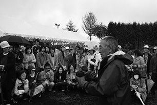
２０１２年３月に、私が校長となって「ＨＯＫＫＡＩＤＯ 木村秋則 自然栽培農学校」がスタートしました。就業を目指す生徒や家庭菜園で自然栽培に取り組む60名以上の生徒たちが、果樹や野菜の栽培を実践的に学んでいます。
ＵＲＬ http://www.facebook.com/akhokkaido
青森県南部町の仲間
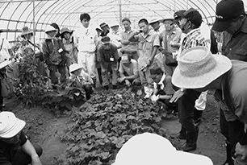
地元・青森で２０１２年４月に「木村秋則 自然栽培ふれあい塾」として発足した実践塾です。官民一体となり運営し、年５回（各２日間）の指導に全国から１００名以上が参加。米、キュウリ、トマト、トウモロコシ、小麦などを作付けし栽培しています。
ＵＲＬ http://www1.town.aomori-nanbu.lg.jp/tassya-mura/051kimura-juku.html
岩手県遠野市の仲間
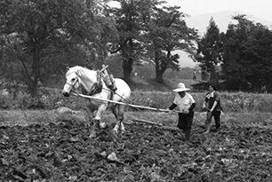
いち早く私の自然栽培に取り組んだリンゴ農家・佐々木悦夫さんを中心に結成された「遠野自然栽培研究会」。リンゴのほかに米や野菜などの栽培にも取り組み、ふじ・紅玉の１００％ジュースなどの販売も行っています。
ＵＲＬ http://www.tonotv.com/members/sinoom01/
宮城県加美町の仲間
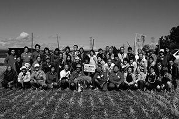
現在「ＮＰＯ法人木村秋則自然栽培に学ぶ会」を中心に稲作や野菜栽培に取り組み、講習会及び、自然栽培米や自然栽培米の煎餅の販売などを行っています。「ＪＡ加美よつば」は全国のＪＡにさきがけて、自然栽培に取り組んでくれました。
新潟県新潟市の仲間
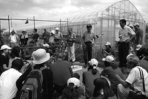
「新潟自然栽培研究会」を主宰する新潟農業・バイオ専門学校は、自然栽培をより理学的に研究して欲しいという私の思いを受けて全国で初めて授業に自然栽培を取り入れました。学生と一般受講生が一緒になり、野菜や果物の栽培を年４回の講座で学んでいます。
石川県羽咋市の仲間
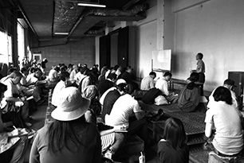
ＪＡはくいと羽咋市農林水産課が共同で運営する「自然栽培実践塾＠はくい」は、２０１１年に「昔の里山」を復活させることを目的として設立されました。稲作や野菜の栽培のほか、自然栽培フェアも開催しています。
ＵＲＬ http://www.is-ja.jp/hakui/akinori_kimura/
愛媛県松山市の仲間
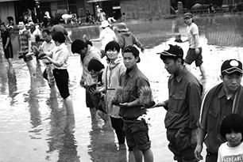
２０１０年、松山市に講演に来たことがきっかけ。社団法人まほろばでは、講演のほかに定期的に「自然栽培実践塾」を開催しています。障害のある人や社会で働きにくい人たちとともに、稲作や野菜、果樹などの自然栽培に取り組んでいます。
ＵＲＬ http://www.facebook.com/maholoba
岡山県倉敷市の仲間
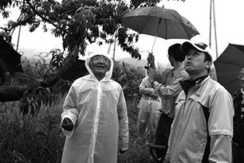
「ＮＰＯ法人 岡山県木村式自然栽培実行委員会」として、２０１０年に発足。農家、ＪＡ、全農、消費者が協力して、自然栽培農作物の生産と流通に取り組み、岡山のみならず、九州や四国へも活動の輪が広がっています。笠岡市の「なんば桃園」では「奇跡の桃」に挑戦し、成功しました。
ＵＲＬ http://www.oka-kimurashiki.jp/
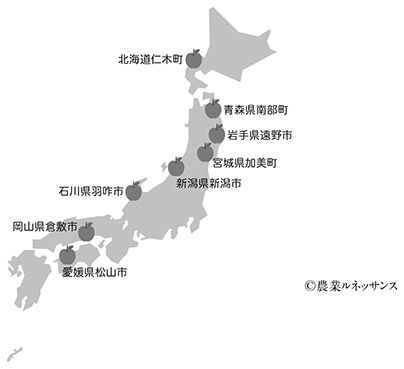
木村秋則 Akinori Kimura
１９４９年、青森県弘前市生まれ。木村興農社代表。
弘前実業高校を卒業後、川崎市内のメーカーに就職するが、１年半で退職。
１９７１年に故郷に戻り結婚、リンゴ栽培を中心とした農業に従事。
農薬で妻が体をこわしたことをきっかけに、１９７８年頃から無農薬・無肥料のリンゴ栽培にチャレンジを始める。
10年近くにわたって無収穫が続き、苦難の日々が続いたが、ついに完全無農薬・無肥料のリンゴ栽培を成功させた。現在、リンゴ栽培のかたわら、国内はもとより海外でも自然栽培法の農業指導を続けている。
また、自身の苦難の日々と成功への軌跡が描かれた映画『奇跡のリンゴ』が２０１３年６月より全国東宝系映画館にて公開される。
オフィシャルサイト http://www.akinorikimura.net/
ソウルメイト 奇跡を支えた魂の絆
発行日 ２０１３年６月25日
著 者 木村秋則
発行者 久保田榮一
発行所 株式会社 扶桑社
〒１０５｜８０７０
東京都港区海岸１｜１５｜１
電話 ０３｜５４０３｜８８８０
(c) Akinori Kimura / Fusosha
●扶桑社「ソウルメイト 奇跡を支えた魂の絆」（２０１３年６月９日 初版第１刷発行）に基づいて制作されました。
※本書の内容を無断で複製・複写・放送・データ配信などをすることは、かたくお断りいたします。